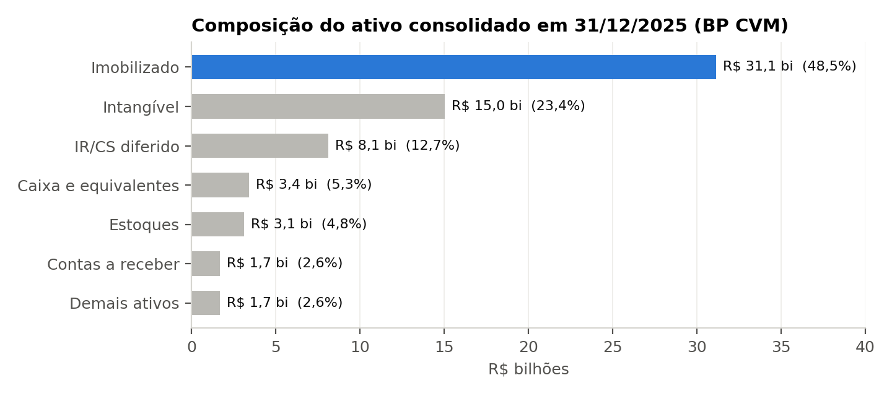
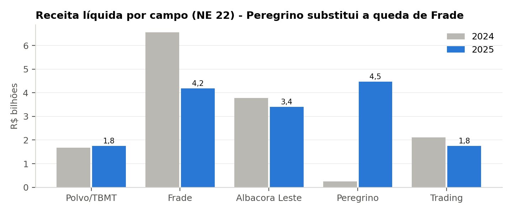
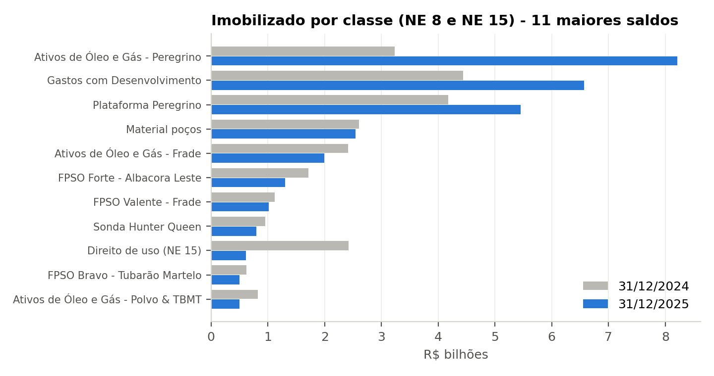
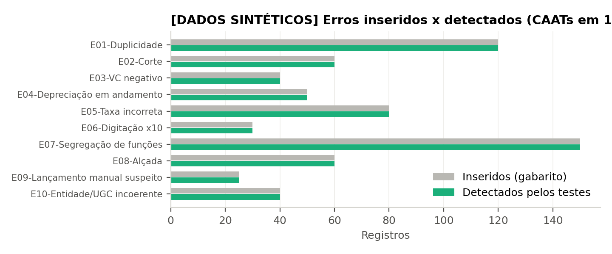
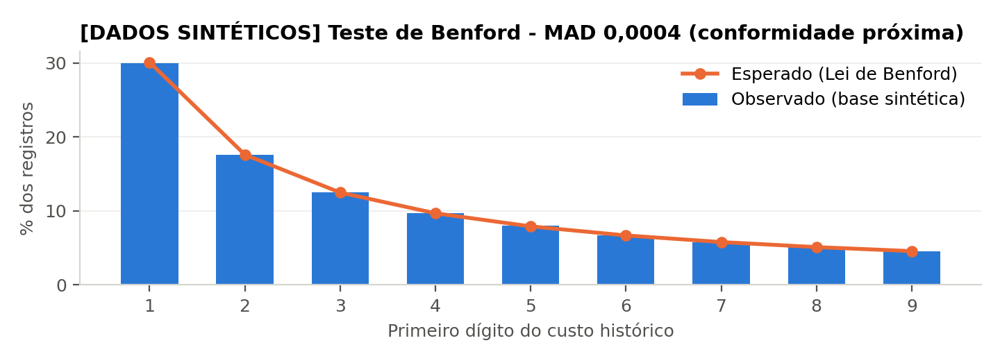
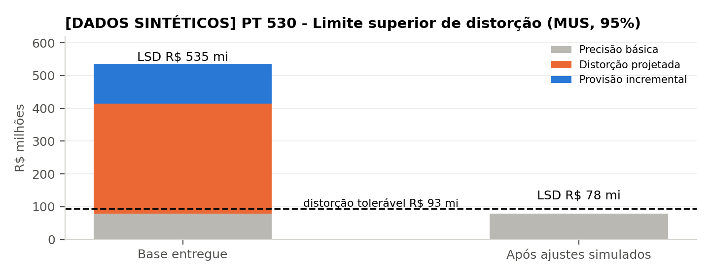
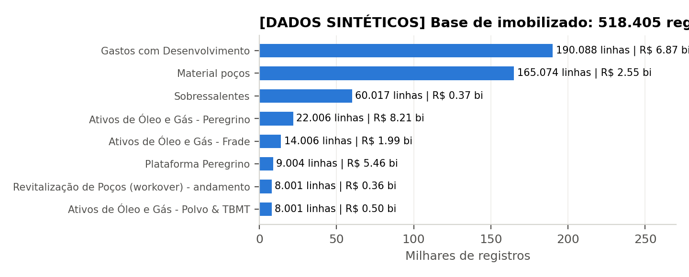
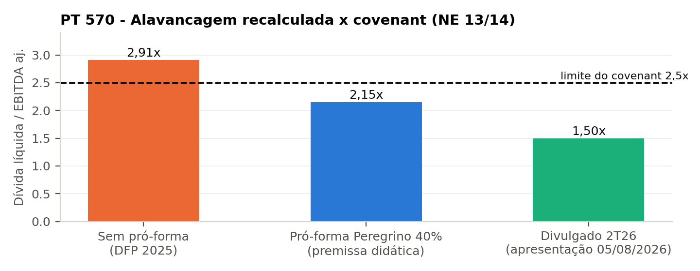
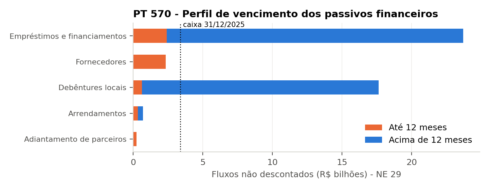

UNIVERSIDADE DE BRASÍLIA - UnB | Auditoria 1 - CCA0024 - Turma 02 - 2026.2 | Prof. Lucas Oliveira Gomes Ferreira
Dossiê de Auditoria PRIO S.A.
Demonstrações contábeis individuais e consolidadas de 31/12/2025
NBC TA Estrutura Conceitual e NBC TA 200 a 600 - avaliação P2
Companhia: PRIO S.A. (antiga Petro Rio S.A. e HRT Participações em Petróleo S.A.) - CNPJ 10.629.105/0001-68 - Código CVM 022187 - B3: PRIO3 (Novo Mercado) Exercício examinado: 2025, com comparativos de 2024 | Data-base: 31/12/2025 Preparador: Matrícula 231019943 | Data de preparação: 23/10/2026 | Data de corte da pesquisa: 23/10/2026 Moeda: R$ mil, salvo indicação (base simulada em R$)
Natureza do documento. Trabalho acadêmico individual. Não constitui opinião profissional de auditoria independente, não foi
emitido por firma de auditoria e não substitui o relatório da KPMG Auditores Independentes Ltda. de 10/03/2026. Nenhuma empresa,
auditor, cliente ou fornecedor foi contatado. Confirmações, entrevistas, inspeções físicas e acessos a sistemas não foram
realizados; aparecem apenas como procedimentos planejados ou simulados, sempre identificados. Os dados da base de
imobilizado (518.405 registros) são sintéticos, gerados para fins didáticos, e não são registros reais da companhia.
Índice do dossiê
Convenção de códigos e de referências cruzadas em PT 230. Cada papel de trabalho segue a estrutura mínima exigida:
código, título, norma e itens; objetivo e conta; afirmações e riscos; população, fontes e critérios; procedimentos com classificação;
evidências e referências cruzadas; resultados, exceções, conclusão e limitações; preparador e campo de revisão.
Realizado com evidência públicaPlanejado por falta de acessoSimulado para fins didáticos
Identidade, alterações de nome empresarial e de código de negociação
Atributo
Informação verificada
Fonte
Denominação atual
PRIO S.A. desde 12/05/2023
FCA 2026 (CVM), campo Data_Nome_Empresarial
Denominação anterior
PETRO RIO S.A. (renomeada PRIO S.A. em 12/05/2023)
FCA 2026, campo Nome_Empresarial_Anterior
Denominação de origem
HRT Participações em Petróleo S.A. (ex-controladora da HRT Walvis, Namíbia - NE 2.3)
NE 2.3 da DFP 2025 (subsidiárias "HRT Walvis"); histórico corporativo - ver nota abaixo
Código de negociação
PRIO3 - ações ordinárias, B3, Novo Mercado; início de negociação/listagem registrado em 25/10/2010
FCA 2026, item valor mobiliário
CNPJ / Código CVM
10.629.105/0001-68 / 022187 (registro CVM 21/10/2010, categoria A)
FCA 2026
Data de constituição
FCA: 13/10/2008 | NE 1: "constituída em 17 de julho de 2009" - divergência
FCA 2026 x DFP 2025 p. 43
Atividade
Exploração e produção (E&P) de petróleo e gás natural, Bacia de Campos; holding operacional
NE 1 (p. 43)
Auditor 2025
KPMG Auditores Independentes Ltda. (desde 2025) - opinião sem ressalva de 10/03/2026
DFP 2025 p. 99-102; FCA 2026
Auditor 2020-2024
Ernst & Young Auditores Independentes S/S Ltda. - relatório sem modificação de 12/03/2025
DFP 2024 (dados abertos, pareceres)
Moeda funcional
Dólar norte-americano (todas as entidades); apresentação em reais
NE 2.4 (p. 47-48)
Nota de ceticismo sobre a identidade. A companhia atribuída foi mantida durante todo o trabalho (mesmo CNPJ e código CVM).
O FCA registra o código PRIO3 com início em 25/10/2010, data da listagem original; a negociação sob o código HRTP3 no período HRT
(2010-2015) é informação histórica que não consta dos documentos primários consultados e, por isso, é registrada apenas como
referência a confirmar no histórico de códigos da B3. A divergência sobre a data de constituição (FCA x NE 1) foi levada ao PT 265.
Indicadores-chave (dados reais públicos)
R$ 15,58 bi
Receita líquida 2025 (+8,5%)
R$ 2,25 bi
Lucro líquido 2025 (2024: R$ 10,30 bi)
R$ 8,16 bi
EBITDA ajustado recalculado (margem 52,3%)
2,91x
Dívida líquida / EBITDA aj. sem pró-forma (covenant 2,5x)
106,4 mil bpd
Produção média 2025 (recorde; RA p. 27)
US$ 69,14
Brent médio 2025 (2024: US$ 80,52; EIA)
R$ 5,5855
PTAX média 2025 (fim: 5,5024; BCB)
757,3 MMbbl
Reservas 1P D&M em 01/01/2026 (811,3 com +20% Peregrino)
Balanço patrimonial consolidado resumido (R$ mil) - CVM Dados Abertos (F02), DFP p. 12-16
Conta
31/12/2024
31/12/2025
Var.
Ativo total
55.746.165
64.179.605
15,1%
Ativo circulante
7.952.572
9.573.265
20,4%
Imobilizado
25.297.509
31.142.804
23,1%
Intangível
16.502.462
15.038.640
-8,9%
IR/CS diferido ativo
5.636.399
8.121.172
44,1%
Passivo circulante
3.688.444
5.262.495
42,7%
Empréstimos, debêntures e arrendamentos (circ. + não circ.)
22.433.677
28.438.286
26,8%
Provisão para abandono
3.387.766
5.447.438
60,8%
Patrimônio líquido
25.924.192
25.779.881
-0,6%
Demonstração do resultado consolidada resumida (R$ mil) - DFP p. 17-18
Conta
2024
2025
Var.
Receita líquida
14.360.653
15.583.960
8,5%
Resultado bruto
7.274.777
3.114.907
-57,2%
EBIT
6.945.461
1.809.322
-73,9%
Resultado financeiro
-584.342
-2.041.935
-249,4%
Resultado antes dos tributos
6.361.119
-232.613
-103,7%
IR e CS (diferido positivo)
3.940.487
2.484.092
-37,0%
Lucro líquido
10.301.606
2.251.479
-78,1%

Figura 1 - Composição do ativo em 31/12/2025. O imobilizado (48,5%) é a conta de maior materialidade e é a base simulada obrigatória (PT 530).

Figura 2 - Receita líquida por campo (NE 22, p. 89). Peregrino, adquirido em etapas (dez/2024 e nov/2025), passa a ser o maior campo.
Leitura do exercício
Em 2025 a PRIO aumentou a produção em 27% (recorde de 106,4 mil bpd), principalmente pelas aquisições em Peregrino: 40% via
combinação de negócios Stellina (dez/2024) e mais 40%, com a operação, comprados da Equinor em 11/11/2025 por US$ 1.564 milhões no
fechamento (NE 9.d). Mesmo com o Brent médio 14,1% menor (US$ 69,14 contra US$ 80,52), a receita cresceu 8,5%. O lucro líquido caiu 78%,
para R$ 2,25 bi, por três motivos: depreciação, amortização e exaustão 135% maior (Peregrino a valor justo); resultado financeiro de
R$ -2,04 bi (dívida bruta de R$ 27,1 bi); e um crédito de IR diferido menor do que o de 2024, quando foi reconhecido o prejuízo
fiscal da Forte. O LAIR foi negativo (R$ -232,6 mi) e o lucro só é positivo por causa do IR diferido (R$ +2,9 bi), ponto que
orienta materialidade, fraude e estimativas (PT 320, PT 240, PT 540).
PT EC
Estrutura conceitual - caracterização do trabalho
NBC TA Estrutura Conceitual para Trabalhos de Asseguração (DOU 25/11/2015), itens 5-11, 20-60
ObjetivoCaracterizar o trabalho, os usuários, o objeto, os critérios, as responsabilidades, a evidência e o nível de asseguração, e distinguir auditoria de outros trabalhos.
Conta, processo ou divulgação examinadaDemonstrações contábeis individuais e consolidadas da PRIO S.A. em 31/12/2025.
Afirmações relevantesTodas as afirmações ao nível das demonstrações como um todo (NBC TA 315 A190).
Riscos identificadosUsar critérios inadequados; confundir o nível de asseguração; usuários com interesses diversos (credores sensíveis a covenants e acionistas a lucro e reservas).
População, fontes e critérios de seleçãoDFP 2025 (F01), FCA 2026 (F06) e relatório do Comitê de Auditoria (DFP p. 104-106). Critério: identificar cada elemento da estrutura conceitual na documentação pública.
Elemento (NBC TA EC)
Aplicação ao trabalho sobre a PRIO
Relacionamento de três partes
Auditor independente (no caso real, KPMG; aqui, o aluno em caráter didático); parte responsável = administração da PRIO S.A. (Diretoria e Conselho de Administração); usuários previstos.
Usuários previstos
Acionistas (capital pulverizado: FMR 5%, Schroder 5%, BlackRock 7,5% em abr/2026), detentores de bonds 2030 (US$ 700 mi) e de debêntures locais (R$ 9,9 bi), 12 bancos credores sujeitos a covenant de 2,5x, ANP (royalties/PE), CVM, B3, Receita Federal e parceiros de JOA (Repsol Sinopec, Equinor).
Objeto
Demonstrações contábeis individuais e consolidadas de 31/12/2025 (BP, DRE, DRA, DMPL, DFC, DVA como informação suplementar) e notas explicativas.
Critérios
Práticas contábeis adotadas no Brasil (Lei 6.404/1976, pronunciamentos CPC aprovados pela CVM) e IFRS Accounting Standards (NE 2.1). Critérios adequados: relevantes, completos, confiáveis, neutros e compreensíveis.
Evidência
No caso real: inspeção, observação, confirmação, recálculo, reexecução, procedimentos analíticos e indagação. Neste dossiê: somente documentos públicos (CVM, B3, RI) e uma base sintética (ver PT 500).
Relatório
Opinião em forma positiva ("apresentam adequadamente, em todos os aspectos relevantes") - modelo NBC TA 700/701 com PAA. Este dossiê não emite opinião.
Nível de asseguração
Razoável (alto, mas não absoluto) - auditoria. Contraste: limitada na revisão das ITR (NBC TR 2410) e na asseguração do inventário de GEE contratada pela PRIO com a KPMG (Relatório do Comitê de Auditoria, DFP p. 104-106).
Auditoria x outros trabalhos de asseguração e serviços correlatos
Trabalho
Norma
Asseguração
Forma da conclusão
Exemplo na PRIO
Auditoria de demonstrações contábeis
NBC TA 200-810
Razoável
Positiva (opinião)
DFP 2025 - KPMG, 10/03/2026
Revisão de informações intermediárias
NBC TR 2410
Limitada
Negativa ("nada chegou ao nosso conhecimento")
ITR 1T26 e 2T26 (F05)
Asseguração de informação não histórica
NBC TO 3000 / 3410
Limitada ou razoável
Conforme o trabalho
Inventário de GEE 2024 e 2025 (KPMG)
Procedimentos previamente acordados
NBC TSC 4400
Nenhuma
Relato de constatações
Ex.: certificação de covenants para credores (hipótese)
Compilação
NBC TSC 4410
Nenhuma
Relatório de compilação
Não aplicável a companhia aberta
Este dossiê acadêmico
Instruções P2
Nenhuma
Conclusão integrada sem opinião
-
Procedimentos planejados ou executados
#
Procedimento
Classificação
Ref. / evidência
1
Identificar parte responsável, usuários previstos e objeto com base na DFP e no FCA
Realizado com evidência pública
F01, F06
2
Avaliar a adequação dos critérios (CPC/IFRS) - declaração de conformidade NE 2.1
Realizado com evidência pública
NE 2.1, p. 46
3
Comparar o relatório da KPMG (razoável) com as revisões de ITR (limitada) e o serviço de GEE
Realizado com evidência pública
p. 99-106; F05
4
Confirmar com a administração os usuários e o uso pretendido do relatório
Planejado por falta de acesso
Requer acesso à administração
Evidências e referências cruzadas
Relatório do auditor (p. 99-102): opinião sem ressalva, PAA = ARO e IR diferido → PT 540
Comitê de Auditoria: contratação da KPMG em 09/04/2025 e serviços de GEE → PT 220, PT 200
Resultados e exceções
Todos os elementos de um trabalho de asseguração razoável estão presentes no caso real. O objeto é auditável e os critérios são adequados e estão disponíveis aos usuários (publicados por CPC e IASB).
Conclusão. O trabalho real é uma auditoria (asseguração razoável) de propósito geral. Este dossiê reproduz o raciocínio do auditor sem asseguração, o que é coerente com a limitação de acesso.
Limitações. Sem acesso à carta de contratação real e à documentação do auditor.
Revisado por: ______________________ | Data: ____/____/______ (campo de revisão em branco; nenhuma revisão de terceiros foi simulada)
PT 200
Objetivos gerais, ética, independência, ceticismo e risco de auditoria
NBC TA 200 (R1) itens 3-24, A20-A57; NBC PG 01 (Código de Ética); NBC PA 400 (independência)
ObjetivoDocumentar ética, independência, ceticismo, julgamento profissional, risco de auditoria e condições para obter segurança razoável.
Conta, processo ou divulgação examinadaTrabalho como um todo.
Afirmações relevantesTodas.
Riscos identificadosAmeaças de interesse próprio e de autorrevisão por serviços não relacionados à auditoria; viés de confirmação diante de narrativa de crescimento.
População, fontes e critérios de seleçãoRelatório do Comitê de Auditoria (serviços da KPMG: GEE e KPMG LLP), FCA (auditor), DFP. Critério: todas as fontes que afetam ética e risco.
Modelo de risco de auditoria aplicado
Componente
Avaliação PRIO 2025
Justificativa
Risco inerente (RI)
Alto em imobilizado/estimativas; moderado em caixa
Aquisições complexas, UOP dependente de reservas, ARO de longo prazo, moeda funcional USD, IR diferido de R$ 8,1 bi
Risco de controle (RC)
Moderado (não testado - premissa)
Companhia do Novo Mercado com Comitê de Auditoria, auditoria interna e compliance (DFP p. 104-106); integração de Peregrino em nov/2025 aumenta o RC no 4T
Risco de distorção relevante (RDR = RI x RC)
Alto nas áreas significativas
Ver matriz no PT 315
Risco de detecção (RD)
Baixo nas áreas significativas
Resposta: testes substantivos extensos e especialistas (PT 330)
Risco de auditoria (RA)
Aceitavelmente baixo
Segurança razoável (item 5)
Ceticismo profissional - situações reais identificadas nas fontes públicas
NE 30: a abertura das provisões cíveis (352.598 + 221.458 + 25.111) não fecha com o BP (642.170). Diferença de R$ 43.003 mil, sendo que 2024 fechava → PT 450
Não há nota explicativa específica para Estoques (R$ 3,11 bi, +158%) → PT 501
Lucro líquido positivo apesar de LAIR negativo, sustentado por IR diferido (R$ +2,9 bi), uma estimativa sensível → PT 540
Alavancagem recalculada de 2,91x (sem pró-forma), acima do covenant de 2,5x; o atendimento depende do EBITDA pró-forma de Peregrino → PT 570
Data de constituição divergente (FCA 13/10/2008 x NE 1 17/07/2009) e responsável técnico no FCA diferente do sócio signatário → PT 265
Reclassificação de R$ 29.885 mil no PL comparativo, sem nota de reapresentação → PT 510
Diferença de R$ 151.210 mil entre D&A da DFC e as movimentações das notas → PT 520
Procedimentos planejados ou executados
#
Procedimento
Classificação
Ref. / evidência
1
Avaliar a independência: serviços de asseguração de GEE (2024 e 2025) e serviços da KPMG LLP aprovados pelo Comitê em 27/10/2025
Realizado com evidência pública
DFP p. 104-106
2
Declaração de independência da equipe e da rede KPMG
Planejado por falta de acesso
Documento interno da firma
3
Aplicar ceticismo: cruzar notas x demonstrações x FCA x fatos relevantes
Realizado com evidência pública
PT 500, PT 450
4
Documentar julgamentos relevantes: base de materialidade, componentes, estimativa selecionada
Realizado com evidência pública
PT 320, PT 600, PT 540
5
Avaliar limitações inerentes: estimativas de reservas, fraude com conluio
Realizado com evidência pública
PT 240, PT 540
Evidências e referências cruzadas
Independência: o Comitê concluiu que os serviços não comprometem a objetividade, e o auditor deve fazer avaliação própria (NBC PA 400) → PT 220
Segurança razoável depende de evidência suficiente e apropriada → PT 500
Resultados e exceções
Nenhuma ameaça impeditiva foi identificada nas fontes públicas. Os serviços de GEE são asseguração (não geram autorrevisão das DFs), mas devem constar do PT de independência. Sete situações de ceticismo foram registradas e encaminhadas.
Conclusão. As condições para segurança razoável existem no caso real: critérios adequados, administração que reconhece suas responsabilidades e acesso a evidências. Neste dossiê, a segurança obtida é apenas didática.
Limitações. Não houve indagação à equipe nem às salvaguardas da firma; o risco de controle não foi testado (premissa moderada).
Revisado por: ______________________ | Data: ____/____/______ (campo de revisão em branco; nenhuma revisão de terceiros foi simulada)
PT 210
Termos do trabalho - carta de contratação didática e precondições
NBC TA 210 (R1) itens 6-12, A20-A28 e Apêndice 1
ObjetivoPreparar carta de contratação didática (objetivo, alcance, responsabilidades, estrutura do relatório) e avaliar as precondições da auditoria.
Conta, processo ou divulgação examinadaAceitação do trabalho - exercício de 2025 (primeiro ano da KPMG).
Afirmações relevantesNão se aplica a afirmações específicas; diz respeito ao trabalho como um todo.
Riscos identificadosPrecondições ausentes; termos ambíguos sobre componentes no exterior e especialistas; risco de primeiro ano.
População, fontes e critérios de seleçãoDFP 2025, relatório do Comitê de Auditoria, FCA 2026.
MINUTA DIDÁTICA - NÃO ENVIADA - SEM VALIDADE JURÍDICA - NÃO REPRESENTA DOCUMENTO DA KPMG OU DA PRIO
Ao Conselho de Administração e ao Comitê de Auditoria da PRIO S.A. - Rio de Janeiro, [data da contratação]
1. Objetivo e alcance. Auditar as demonstrações contábeis individuais e consolidadas da PRIO S.A. em 31/12/2025, conforme as normas
brasileiras e internacionais de auditoria, para expressar opinião sobre se apresentam adequadamente, em todos os aspectos relevantes,
a posição patrimonial e financeira, o desempenho e os fluxos de caixa, segundo as práticas contábeis adotadas no Brasil e as IFRS.
Inclui a DVA (informação suplementar), a leitura do Relatório da Administração (NBC TA 720) e a revisão das ITR de 2025 (NBC TR 2410).
2. Responsabilidades do auditor. Planejar e executar a auditoria para obter segurança razoável; manter ceticismo; comunicar
deficiências significativas, PAA e assuntos de independência à governança; manter independência (NBC PA 400 e regras da CVM).
Por limitações inerentes, há risco inevitável de que distorções relevantes não sejam detectadas.
3. Responsabilidades da administração (precondição). (a) elaborar as DFs conforme CPC/IFRS; (b) manter controles internos
necessários; (c) fornecer acesso irrestrito a registros, documentos, pessoal e componentes do grupo, inclusive Lux Holding (Luxemburgo)
e PrioAustria; (d) fornecer representações formais (NBC TA 580); (e) disponibilizar laudos de especialistas: D&M (reservas) e avaliadores
de ARO e de alocação de preço de compra.
4. Estrutura do relatório. Opinião; base para opinião; PAA (NBC TA 701); outros assuntos (DVA e auditoria anterior pela EY);
outras informações; responsabilidades. A forma e o conteúdo poderão mudar conforme as constatações.
5. Outros termos. Equipe e especialistas (PT 220); cronograma (PT 300); honorários [não divulgados - não simular];
acesso aos papéis do auditor antecessor (NBC TA 510); auditores de componentes (NBC TA 600).
De acordo: ____________________ (Administração) ____________________ (Auditor) - campos em branco
Procedimentos planejados ou executados
#
Procedimento
Classificação
Ref. / evidência
1
Avaliar a estrutura de relatório financeiro e a declaração de conformidade
Realizado com evidência pública
NE 2.1
2
Verificar o reconhecimento de responsabilidades pela administração em documentos públicos
Realizado com evidência pública
p. 107-108
3
Redigir carta de contratação didática (anexa)
Simulado para fins didáticos
Minuta abaixo
4
Obter a carta assinada e o acordo sobre honorários e acesso aos componentes
Planejado por falta de acesso
Documento contratual
Evidências e referências cruzadas
Precondições → tabela abaixo; responsabilidades refletidas na minuta da carta de representações → PT 580
Atendida - CPC/IFRS, estrutura de propósito geral prescrita por lei e pela CVM
NE 2.1 (p. 46)
Administração reconhece a responsabilidade pela elaboração
Atendida (evidência indireta)
Declaração dos Diretores, DFP p. 107-108
Responsabilidade pelos controles internos
Atendida (evidência indireta)
Relatório do Comitê; auditoria interna e compliance
Acesso irrestrito a informações e pessoas
Não verificável publicamente → condição contratual
Planejado
Ausência de limitação de alcance imposta
Nenhuma indicação; o Comitê registrou que a KPMG não reportou restrições no 2T25
DFP p. 104
Mudança de auditor (rodízio)
Troca EY → KPMG aprovada pelo Comitê em 09/04/2025; comunicação com antecessor exigida
DFP p. 104; PT 510
Conclusão. As precondições verificáveis estão atendidas; o acesso irrestrito depende de cláusula contratual. A minuta contém todos os elementos do item 10 da NBC TA 210.
Limitações. A carta é uma minuta acadêmica; não foram simulados honorários, assinaturas nem aceite.
Revisado por: ______________________ | Data: ____/____/______ (campo de revisão em branco; nenhuma revisão de terceiros foi simulada)
PT 220
Gestão da qualidade do trabalho
NBC TA 220 (R3) itens 13-38, A1-A110; NBC PA 01 (R1) e NBC PA 02
ObjetivoPlanejar direção, supervisão, revisão, consultas e recursos; documentar conflitos e riscos à qualidade.
Conta, processo ou divulgação examinadaExecução do trabalho de auditoria 2025.
Afirmações relevantesNão se aplica a afirmações; refere-se ao trabalho.
Riscos identificadosEquipe sem competência setorial; prazo apertado após aquisições; ameaças de independência.
População, fontes e critérios de seleçãoRelatório do Comitê de Auditoria (DFP p. 104-106), NE 1 e 9.d, FCA.
Plano de gestão da qualidade do trabalho
Elemento
Planejamento
Direção
Sócio do trabalho com experiência em E&P e em IFRS 3/IFRS 11; reunião de abertura sobre riscos significativos (Peregrino, ARO, IR diferido, moeda funcional).
Equipe (didática)
Sócio, gerente, 2 seniores, 4 assistentes; especialistas em reservas/engenharia (ARO e UOP), avaliação/finanças corporativas (taxas de desconto, alocação de preço), tributário (IR diferido, Pillar 2) e TI (ERP, CAATs). Sem nomes - não se simulam pessoas reais.
Supervisão
Gerente revisa 100% dos PTs de áreas significativas; sócio revisa PT 315, 320, 330, 450, 540, 570 e 600.
Revisão de qualidade do trabalho (EQR)
Obrigatória para companhia aberta (NBC PA 02); revisor independente da equipe antes da data do relatório.
Consultas
Departamento técnico: (i) aquisição de +40% em Peregrino como aquisição de ativos x combinação de negócios (CPC 15 item B7, teste de concentração); (ii) ARO; (iii) diferença de base tributária por moeda funcional (CPC 32 item 41).
Recursos tecnológicos
Ferramenta de análise de dados para 100% dos lançamentos (no dossiê, scripts Python reproduzíveis - 05_Codigo/).
Cronograma de revisão
Planejamento até set/2025; intermediária out-nov/2025; final jan-mar/2026 (PT 300).
Conflitos e riscos à qualidade
Risco à qualidade
Origem
Resposta
Primeiro ano do auditor
Troca EY → KPMG em 2025
Mais tempo no entendimento; revisão dos papéis do antecessor (PT 510)
Pressão de prazo
Fechamento de Peregrino em 11/11/2025, a 50 dias do encerramento
Procedimentos de alocação antecipados para dez/2025; especialistas reservados
Serviços não-auditoria
GEE (KPMG Brasil) e serviços da KPMG LLP (out/2025)
Avaliação de ameaças e salvaguardas; pré-aprovação pelo Comitê (realizada)
Especialização setorial
UOP, reservas, JOA, ANP
Especialistas internos e avaliação dos especialistas da administração (D&M) - NBC TA 500 item 8
Componentes no exterior
Lux Holding (Luxemburgo), PrioAustria (Áustria)
Instruções de grupo e avaliação de auditores de componente (PT 600)
Procedimentos planejados ou executados
#
Procedimento
Classificação
Ref. / evidência
1
Mapear riscos à qualidade decorrentes de eventos públicos (troca de auditor, Peregrino, serviços não-auditoria)
Realizado com evidência pública
p. 104-106
2
Definir composição da equipe, especialistas e plano de revisão
Simulado para fins didáticos
Tabela acima (didática)
3
Documentar consultas técnicas sobre Peregrino e moeda funcional
Planejado por falta de acesso
Consulta interna da firma
4
Executar EQR antes da emissão do relatório
Planejado por falta de acesso
NBC PA 02
Evidências e referências cruzadas
Riscos significativos que exigem supervisão do sócio → PT 315
Revisado por: ______________________ | Data: ____/____/______ (campo de revisão em branco; nenhuma revisão de terceiros foi simulada)
PT 230
Documentação de auditoria
NBC TA 230 (R1) itens 7-16, A1-A24
ObjetivoCriar índice, convenção de códigos, referências cruzadas, controle de versões e procedimentos de montagem e guarda do arquivo.
Conta, processo ou divulgação examinadaArquivo de auditoria (pastas 01 a 07 desta entrega).
Afirmações relevantesNão se aplica.
Riscos identificadosDocumentação insuficiente para que um auditor experiente entenda o trabalho; perda de rastreabilidade; alteração posterior não registrada.
População, fontes e critérios de seleçãoEstrutura de pastas da entrega e scripts.
Remete ao papel de trabalho citado (link clicável no PDF)
F01...F17
Fonte pública na relação de fontes (Anexo C), com URL, data de acesso, página e exercício
NE x, p. y
Nota explicativa x, "PÁGINA y de 108" da DFP 2025 (CVM)
✓ / Σ / ⓡ
Conferido com documento / somado / reconciliado (aplicado nas planilhas)
[DADOS SINTÉTICOS]
Informação gerada pela base simulada - nunca representa registro real
Controle de versões, montagem e guarda
Controle de versões: a versão entregue é a v1.0 (23/10/2026); cada arquivo gerado traz data e preparador; alterações posteriores devem ser registradas no LEIA-ME com data, motivo e responsável, sem sobrescrever a versão entregue.
Reprodutibilidade: python 05_Codigo/run_all.py regenera dados públicos, base, testes, planilhas, gráficos e este PDF. A semente aleatória 231019943 garante resultados idênticos.
Montagem do arquivo final: até 60 dias após a data do relatório (NBC TA 230 item 14 e A21). Depois disso, nada é excluído; adições são datadas e justificadas (item 16).
Guarda: mínimo de 5 anos (NBC TA 230 A23 e regulamentação CVM aplicável a auditores), com acesso restrito; no trabalho acadêmico, a pasta entregue e o registro de versões formam a trilha de auditoria.
Dados brutos baixados (zip CVM) ficam em 07_Dados_Publicos/brutos/, não acompanham a entrega e são reobtidos pelo script 00.
Procedimentos planejados ou executados
#
Procedimento
Classificação
Ref. / evidência
1
Definir índice e convenção de códigos
Realizado com evidência pública
Tabela acima
2
Implantar referências cruzadas clicáveis no PDF
Realizado com evidência pública
Todo o dossiê
3
Registrar a versão entregue e as regras de alteração
Revisado por: ______________________ | Data: ____/____/______ (campo de revisão em branco; nenhuma revisão de terceiros foi simulada)
PT 240
Fraude - avaliação de riscos e respostas
NBC TA 240 (R1) itens 16-44, A1-A50 (versão vigente para 2025; a (R2) publicada no DOU de 25/09/2026 foi consultada e não aplicada)
ObjetivoAvaliar fatores de risco de fraude, inclusive reconhecimento de receita e burla de controles pela administração; planejar testes de lançamentos e respostas.
Conta, processo ou divulgação examinadaReceita (venda de óleo próprio e trading); imobilizado (capitalização); estimativas; lançamentos manuais.
Afirmações relevantesOcorrência e corte (receita); existência e classificação CAPEX/OPEX (imobilizado); avaliação (estimativas).
Riscos identificadosRiscos significativos de fraude: (1) receita - corte de cargas em dez/2025 e trading (presunção do item 26, não refutada); (2) burla de controles pela administração (item 31, sempre presente); (3) capitalização indevida de OPEX para melhorar o EBITDA do covenant.
População, fontes e critérios de seleçãoDFP 2025; base sintética (518.405 registros) para os testes de lançamentos. Critério: todos os lançamentos com características de risco.
Fatores de risco de fraude (triângulo) - PRIO 2025
Fator
Indício observado em fonte pública
Fonte
Incentivo/pressão
Covenant de 2,5x dívida líquida/EBITDA em 12 contratos e nas debêntures; recálculo sem pró-forma de 2,91x
NE 13-14 (p. 77, 79); PT 570
Incentivo/pressão
Remuneração variável relevante: 84% da remuneração da administração é baseada em ações (R$ 29.376 de 34.932 mil)
NE 21 (p. 88)
Incentivo/pressão
LAIR negativo; lucro dependente de IR diferido; meta pública de política de dividendos em 2026
DRE; RA p. 27
Oportunidade
Estimativas complexas (ARO, UOP/reservas, alocação de preço de Peregrino, IR diferido por moeda funcional)
NE 8, 9, 16, 17
Oportunidade
Trading de óleo de terceiros (R$ 1,75 bi) e vendas no fim do ano (BP: R$ 542 mi a receber de vendas de dez/2025)
NE 4, 22
Oportunidade
Capitalização de gastos: R$ 874,6 mi de materiais capitalizados levados a CPV em 2025 ("reparos de emergência")
NE 8 (p. 68)
Oportunidade
Integração de Peregrino (operação assumida em 11/11/2025) e JOA com cash calls/billing statements
NE 1, 2.11
Atitude/racionalização
Nenhum indício público (sem histórico de reapresentação); ambiente de governança do Novo Mercado; canal de integridade reformulado em 2025
DFP p. 104-106
Testes de lançamentos contábeis (burla de controles) - aplicados à base sintética
Critério de seleção (100% da população)
Itens sinalizados
Resultado [SIMULADO]
Valor redondo ≥ R$ 1 mi + fim de semana + usuário genérico + documento AJ- + sem fornecedor (score ≥ 3)
25
25 lançamentos fictícios de OPEX capitalizado (R$ 282 mi) - todos detectados
Lançador = aprovador
175
150 inseridos (E07) + 25 do usuário USR_TEMP
Valor > R$ 5 mi aprovado por gerente
82
60 inseridos (E08) + 22 entre os itens E09/duplicatas
Benford - 1º dígito do custo
MAD 0,0004
Conformidade próxima; sem desvio sistemático
Procedimentos planejados ou executados
#
Procedimento
Classificação
Ref. / evidência
1
Discussão da equipe (brainstorming) sobre onde as DFs são suscetíveis a fraude
Simulado para fins didáticos
Fatores acima
2
Indagar administração, Comitê de Auditoria e auditoria interna sobre fraudes conhecidas ou suspeitas
Planejado por falta de acesso
Sem acesso
3
Analisar receita por campo/mês x volumes ANP e preços Brent (analítico)
Realizado com evidência pública
PT 520
4
Testar corte: cargas embarcadas de 20/12/2025 a 10/01/2026 (B/L x fatura x data de transferência de controle)
Planejado por falta de acesso
Documentos de embarque
5
Testar lançamentos manuais e de fim de período por critérios de risco em 100% da população
Simulado para fins didáticos
PT 330 T07-T09
6
Revisar estimativas para viés da administração (ARO, IR diferido, UOP)
Realizado com evidência pública
PT 540
7
Avaliar a razão de negócio de transações fora do curso normal: acordo do FPSO Polvo (R$ -142,9 mi), perda pela parada de Peregrino (R$ -194,8 mi)
Nas fontes públicas não foi identificado indício de fraude real. Na simulação, os 25 lançamentos fraudulentos inseridos (R$ 282 mi, acima da MG) foram 100% detectados pelos critérios de risco. Se fosse um caso real, a matéria seria comunicada ao Comitê de Auditoria (item 40) e avaliada quanto a outros efeitos (item 36).
Conclusão. Os riscos presumidos de receita e de burla de controles se mantêm significativos; as respostas planejadas e simuladas são adequadas. Não há evidência pública de fraude.
Limitações. Indagações, testes de corte com documentos de embarque e acesso ao diário contábil real não foram possíveis.
Revisado por: ______________________ | Data: ____/____/______ (campo de revisão em branco; nenhuma revisão de terceiros foi simulada)
PT 250
Leis e regulamentos
NBC TA 250 itens 12-30, A6-A26
ObjetivoMapear obrigações relevantes e riscos de descumprimento; definir procedimentos e comunicações diante de indícios.
Conta, processo ou divulgação examinadaProvisões, contingências, royalties, tributos, licenças (premissa de continuidade de campos).
Afirmações relevantesCompletude e avaliação de provisões; divulgação de passivos contingentes; ocorrência de multas.
Riscos identificadosDescumprimento regulatório (ANP/IBAMA) com efeito direto (multas, royalties) ou indireto (interdição, perda de licença).
População, fontes e critérios de seleçãoNE 1, 12, 23, 25, 30; fatos relevantes de 2026. Critério: leis com efeito direto nos valores ou fundamentais para a operação.
Mapa de obrigações legais e regulatórias relevantes
Norma/regulador
Obrigação
Efeito nas DFs
Indício / risco 2025
Lei 9.478/1997 e Decreto 2.705/1998 (ANP)
Royalties (até 10%) e participação especial
CPV R$ 1.533.652 mil (NE 23); a pagar R$ 225.851 mil (NE 12)
Analítico de royalties dentro da precisão (PT 520)
Contratos de concessão ANP - conteúdo local
Percentuais mínimos de conteúdo local
Provisão provável de R$ 224.872 mil (multas, Prio Forte)
Indício de descumprimento já provisionado (NE 30)
ANP - segurança operacional (SGSO)
Gestão de segurança de instalações
Perda pela parada de Peregrino de R$ 194.765 mil (NE 25)
Interdição do FPSO Peregrino pela ANP (ago/2025), retomada em 17/10/2025 (NE 1)
IBAMA - licenciamento ambiental
LP/LI/LO; Foz do Amazonas
Capitalização de Wahoo (R$ 6,57 bi em andamento)
LO de Wahoo emitida em 03/03/2026; blocos da Foz suspensos desde 2023
Indício identificado: a interdição do FPSO Peregrino pela ANP (ago/2025) apontou deficiências de documentação de gestão de riscos e do sistema de dilúvio. Tratamento: (i) confirmar que a perda operacional (R$ 194,8 mi) foi reconhecida (sim, NE 25); (ii) avaliar multas potenciais não provisionadas (planejado); (iii) comunicar à governança como assunto de descumprimento (minuta no PT 260).
Conclusão. Os descumprimentos conhecidos estão refletidos (provisão de conteúdo local e perda de Peregrino). Não há indício público de descumprimento não registrado com efeito relevante.
Limitações. Sem acesso a correspondências regulatórias e sem confirmação jurídica.
Revisado por: ______________________ | Data: ____/____/______ (campo de revisão em branco; nenhuma revisão de terceiros foi simulada)
PT 260
Comunicação com os responsáveis pela governança
NBC TA 260 (R2) itens 9-23, A1-A52; NBC TA 701
ObjetivoPreparar comunicação sobre alcance, época, riscos significativos, independência e principais dificuldades.
Conta, processo ou divulgação examinadaGovernança: Conselho de Administração, Comitê de Auditoria estatutário (3 membros, 9 reuniões em 2025) e Conselho Fiscal.
Afirmações relevantesNão se aplica.
Riscos identificadosFalha na comunicação tempestiva de constatações significativas e de independência.
População, fontes e critérios de seleçãoRelatório do Comitê de Auditoria (DFP p. 104-106) e parecer do Conselho Fiscal (p. 103).
MINUTA DIDÁTICA - NÃO ENVIADA - SEM VALIDADE JURÍDICA
Ao Comitê de Auditoria e ao Conselho de Administração da PRIO S.A.
1. Alcance e época planejados. Auditoria das DFs individuais e consolidadas de 31/12/2025, com materialidade global de R$ 155 mi
(1% da receita) e materialidade de execução de R$ 93 mi. Componentes significativos: Tigris (Peregrino), Forte (Frade/Wahoo e Albacora Leste);
procedimentos específicos em Bravo e nas entidades de trading (PT 600). Fases: intermediária out-nov/2025; final jan-fev/2026; relatório previsto para 10/03/2026.
2. Riscos significativos. (i) receita - corte e trading (fraude presumida); (ii) burla de controles; (iii) provisão para abandono;
(iv) recuperabilidade do IR diferido; (v) contabilização da aquisição de +40% de Peregrino; (vi) UOP/reservas e impairment do ágio da Forte.
3. Independência. Declaramos atender aos requisitos éticos. Comunicamos os serviços de asseguração do inventário de GEE e os
serviços da KPMG LLP aprovados pelo Comitê, avaliados como não impeditivos (salvaguarda: pré-aprovação e equipes distintas).
4. Constatações e dificuldades (até a data desta minuta). (a) divulgação das provisões cíveis (NE 30) com diferença de R$ 43 mi; (b) ausência de nota
de estoques; (c) reclassificação no PL comparativo sem divulgação; (d) dependência do EBITDA pró-forma para atender o covenant; (e) deficiências de
controle em ambiente simulado (PT 265); (f) dificuldade: prazo curto entre o fechamento de Peregrino (11/11/2025) e o encerramento.
5. Distorções. Distorções não corrigidas abaixo do limite trivial na simulação (PT 450). Solicitamos correção das divulgações listadas.
6. Assuntos regulatórios. Interdição do FPSO Peregrino (ANP, ago/2025) - avaliação de multas e controles de segurança operacional.
Procedimentos planejados ou executados
#
Procedimento
Classificação
Ref. / evidência
1
Identificar os responsáveis pela governança e o calendário de reuniões do Comitê
Realizado com evidência pública
p. 104-106
2
Redigir minuta de comunicação de planejamento e constatações
Simulado para fins didáticos
Minuta abaixo
3
Apresentar e discutir com o Comitê; obter a ata
Planejado por falta de acesso
Sem acesso
4
Avaliar a adequação da comunicação bidirecional (item 22)
A minuta cobre os requisitos dos itens 14-17 (responsabilidades, alcance e época, constatações significativas, independência). O Comitê se reuniu 9 vezes em 2025, o que permite comunicação tempestiva.
Conclusão. A comunicação planejada é suficiente e tempestiva. A versão aqui é didática.
Limitações. Minuta não enviada; sem ata nem resposta da governança.
Revisado por: ______________________ | Data: ____/____/______ (campo de revisão em branco; nenhuma revisão de terceiros foi simulada)
PT 265
Deficiências de controle interno - matriz
NBC TA 265 itens 7-11, A1-A30
ObjetivoPreparar matriz com condição, critério, causa, efeito e recomendação, distinguindo hipóteses de constatações sustentadas por evidências.
Conta, processo ou divulgação examinadaControles sobre divulgação, cadastro, imobilizado (aprovação/segregação) e operações.
Afirmações relevantesApresentação e divulgação; existência e classificação (imobilizado).
Riscos identificadosDeficiências significativas não comunicadas; confundir hipóteses com constatações.
População, fontes e critérios de seleçãoFontes públicas (DFP, FCA) e base sintética (para as constatações simuladas).
#
Natureza
Condição
Critério
Causa
Efeito
Recomendação
1
Constatação - evidência pública
NE 30 não reconcilia provisões cíveis com o BP (diferença de R$ 43.003 mil); remissões incorretas (NE 2.16); reclassificação no PL sem nota
CPC 26 itens 38-41; CPC 25 item 84
Revisão insuficiente do processo de divulgação (checklist)
Risco de divulgação incorreta e perda de confiabilidade
Checklist de divulgação com conciliação nota x BP aprovada pelo controller
2
Constatação - evidência pública
Ausência de nota específica de estoques (R$ 3,11 bi)
CPC 16 item 36
Possível julgamento de imaterialidade inadequado
Usuário não conhece composição (óleo x materiais) nem provisões
Incluir nota com composição, critério de NRV e baixas
3
Constatação - evidência pública
Data de constituição divergente (FCA 13/10/2008 x NE 1 17/07/2009); responsável técnico do auditor no FCA diferente do sócio signatário
Res. CVM 80/2022 (consistência cadastral)
Atualização cadastral sem conferência
Informação cadastral inconsistente aos usuários
Conciliar FCA x DFP antes do arquivamento
4
Constatação - SIMULADA
175 lançamentos do imobilizado aprovados pelo próprio lançador; 82 acima de R$ 5 mi aprovados por gerente; usuário genérico USR_TEMP com 25 lançamentos manuais
Política de alçadas e segregação de funções (premissa)
Perfis de acesso do ERP mal configurados (simulado)
Capitalização fictícia de R$ 282 mi não prevenida (detectada só por teste)
Bloquear autoaprovação; workflow de alçada; eliminar usuários genéricos; revisão periódica de acessos
5
Hipótese
Transferência de R$ 874,6 mi de materiais do imobilizado para CPV ("reparos de emergência")
CPC 27 itens 7-8 e CPC 16
Critério de capitalização de sobressalentes e materiais pouco preciso
Possível superavaliação do imobilizado ou oscilação do CPV
Testar a política de capitalização (planejado)
6
Hipótese
Interdição do FPSO Peregrino (ANP) por documentação de gestão de riscos, ainda sob operação da Equinor
3 constatações com evidência pública (divulgação/cadastro - deficiências, não significativas isoladamente); 1 constatação simulada classificada como deficiência significativa (permitiu capitalização fictícia acima da MG); 2 hipóteses que dependem de acesso interno.
Conclusão. As constatações públicas são deficiências de controle de divulgação, a comunicar à administração. A simulada seria comunicada por escrito à governança (item 9).
Limitações. Sem walkthroughs nem testes de controles reais; as hipóteses não foram confirmadas.
DFs individuais e consolidadas; 4 componentes significativos/relevantes; DVA; leitura do RA; ITR.
Prioridades (justificativa)
1º Peregrino (aquisição e UOP) - 29% da receita e do ativo de longo prazo; 2º ARO e IR diferido (PAA, julgamento alto); 3º receita/corte (fraude presumida); 4º dívida/covenants (continuidade); 5º estoques (+158% e sem nota).
Materialidade
MG R$ 155 mi; ME R$ 93 mi; trivial R$ 7,75 mi (PT 320).
Abordagem
Combinada: testes de controles nos ciclos de receita e capex; substantiva nas estimativas; analíticos de suporte; CAATs em 100% dos lançamentos.
Recursos
Especialistas em reservas/ARO, avaliação, tributos e TI (PT 220).
Alterações do plano
(i) Ago/2025, interdição de Peregrino: incluídos testes da perda operacional e de multas; (ii) nov/2025, fechamento de +40%: novo risco significativo de alocação de preço e ARO complementar de R$ 1,32 bi; (iii) LAIR negativo identificado no 4T: troca da base de materialidade para receita.
Cronograma
Fase
Período (didático)
Atividades
Marcos reais
Aceitação/contratação
abr/2025
Independência, carta, comunicação com a EY
Comitê aprova a KPMG em 09/04/2025
Revisões trimestrais
mai, jul, out/2025
ITR 1T, 2T, 3T (NBC TR 2410)
Comitê: 05/05, 31/07 e 31/10/2025
Planejamento e entendimento
jun-set/2025
PT 315, 320; walkthroughs; TI
Contrato de Peregrino com a Equinor em 01/05/2025
Revisão do plano
ago-nov/2025
Interdição ANP; fechamento de Peregrino; bond 2030
Interdição ago/2025; bond 15/10/2025; fechamento 11/11/2025
Intermediária
out-nov/2025
Testes de controles; capex; JOA
-
Inventário/observação
31/12/2025
Óleo nos FPSOs (medição de tanques), almoxarifados de Macaé
Revisado por: ______________________ | Data: ____/____/______ (campo de revisão em branco; nenhuma revisão de terceiros foi simulada)
PT 315
Identificação e avaliação dos riscos de distorção relevante
NBC TA 315 (R2) itens 13-38, A1-A240; Apêndices 1-6
ObjetivoCompreender a entidade, seu ambiente, a estrutura contábil, a TI e os controles; elaborar matriz de riscos por conta e afirmação; identificar riscos significativos.
Conta, processo ou divulgação examinadaTodas as contas relevantes.
Riscos identificadosRiscos significativos (nível mais alto do espectro): receita (corte/fraude); aquisição de Peregrino (alocação); imobilizado e intangível (avaliação: UOP/impairment); IR diferido; ARO; burla de controles.
População, fontes e critérios de seleçãoDFP 2025 (notas 1-31), RA, fatos relevantes, análise horizontal/vertical (06_Resultados/PT520_analise_horizontal_vertical.csv). Critério: contas acima da ME ou com fatores de risco qualitativos.
Procedimentos planejados ou executados
#
Procedimento
Classificação
Ref. / evidência
1
Ler a DFP integralmente e o RA; mapear o portfólio e o grupo
Realizado com evidência pública
NE 1, 2.3, 7
2
Executar análise horizontal/vertical e identificar variações > ME e > 10%
Realizado com evidência pública
PT 520
3
Avaliar fatores de risco inerente (complexidade, subjetividade, mudança, incerteza, viés)
Realizado com evidência pública
Matriz
4
Entender a TI e fazer walkthrough dos controles relevantes
Planejado por falta de acesso
Sem acesso
5
Comparar riscos com os PAA da KPMG (2025) e da EY (2024)
Realizado com evidência pública
p. 99-102; F03
Evidências e referências cruzadas
Respostas → PT 330; PAA reais: ARO e IR diferido (KPMG); combinação de negócios, impairment, ARO e IR diferido (EY 2024) → PT 510
Resultados e exceções
Dimensão (item 19)
Entendimento obtido
Setor e ambiente
E&P offshore na Bacia de Campos; preço do Brent (-14% em 2025; recuperação para US$ 95 de média em 2026 até out, EIA); câmbio; regulação ANP/IBAMA; Pillar 2 e Reforma Tributária.
Natureza da entidade
Maior independente de óleo e gás do Brasil; estratégia de aquisição e redesenvolvimento de campos maduros; 7 campos/clusters; 17 clientes, sendo Repsol 29% e Unipec 15% das vendas (NE 29).
Estrutura e financiamento
Holding com controladas no Brasil, Luxemburgo e Áustria; dívida bruta de R$ 27,1 bi (bonds, PPE/ACC/NCE, debêntures com swap para USD).
Estrutura contábil
CPC/IFRS; moeda funcional USD; esforços bem-sucedidos; UOP sobre reservas provadas desenvolvidas; JOA proporcional; hedge accounting de fluxo de caixa.
Mudanças contábeis/estimativas
Vida econômica de Peregrino: 2031 → 2034 a partir de jan/2026 (NE 2.22.1); atualização das taxas de ARO (+R$ 722,5 mi); IFRS 18 a partir de 2027.
Ambiente de controle
Novo Mercado; Comitê de Auditoria estatutário; auditoria interna; compliance e canal de integridade (DFP p. 104-106).
Processo de avaliação de riscos
Gestão de riscos de mercado, crédito e liquidez pelo CA (NE 29); política de derivativos que admite fins especulativos (NE 29) - ponto de atenção.
TI
ERP e sistemas não divulgados publicamente (hipótese a confirmar: ERP integrado para contabilidade, suprimentos e ativo fixo); interfaces críticas com billing statements de JOA, sistemas de medição fiscal ANP e trading. Controles gerais de TI (acesso, mudança, operação) planejados - PT 330.
Atividades de controle relevantes
Aprovação de capex e alçadas; conciliação de cash calls; medição fiscal; corte de cargas; revisão de estimativas pelo Comitê.
Matriz de riscos por conta e afirmação (risco inerente - espectro)
Conta / transação
Ocorrência
Existência
Integridade
Exatidão / corte
Avaliação
Apresentação/ divulgação
Fator de risco principal
Receita de venda de óleo e trading
Significativo
Significativo
Alto
Moderado
-
Moderado
Corte de cargas em dez; trading; fraude presumida
Contas a receber (R$ 1,69 bi)
-
Moderado
Moderado
Moderado
Alto
Moderado
Concentração BP/Mercuria; prazo médio de 39,6 dias contra a política de 30
Caixa e equivalentes (R$ 3,40 bi)
-
Baixo
Baixo
Baixo
Moderado
Moderado
63% em contas remuneradas USD no exterior
Estoques (R$ 3,11 bi)
-
Alto
Moderado
Alto
Alto
Alto
+158%, sem nota; óleo em FPSO; materiais de Peregrino
Imobilizado (R$ 31,14 bi)
-
Alto
Alto
Alto
Significativo
Alto
Capex x opex; UOP; Peregrino a valor justo; impairment
Intangível/ágio (R$ 15,04 bi)
-
Moderado
Moderado
Moderado
Significativo
Moderado
Ágio da Forte R$ 1,52 bi; concessão ABL R$ 7,03 bi
Aquisição +40% Peregrino
Significativo
Moderado
-
Moderado
Significativo
Alto
Aquisição de ativos x combinação; alocação de R$ 9,5 bi
Contingências (R$ 0,76 bi provisão / R$ 4,0 bi possíveis)
-
-
Alto
Moderado
Alto
Alto
Completude; julgamento jurídico
Partes relacionadas
Moderado
-
Alto
Moderado
-
Alto
Completude; capital pulverizado
Conversão USD → BRL (ajustes de conversão)
Moderado
-
-
Alto
Alto
Moderado
Moeda funcional; base tributária
Os riscos avaliados como significativos coincidem com os 2 PAA da KPMG e com os 4 PAA da EY de 2024, o que corrobora a avaliação. Acrescentamos estoques e covenants como riscos altos por fatores identificados no exame público.

Figura 3 - Imobilizado por classe: Peregrino (plataforma e ativos O&G) e gastos de desenvolvimento (Wahoo) concentram o crescimento.
Conclusão. Foram identificados 6 riscos significativos; a matriz orienta natureza, época e extensão dos testes.
Limitações. TI e controles não foram observados; o risco de controle não foi avaliado com evidência.
Lucro antes dos tributos (DRE 3.07) - descartada: negativo/volátil
-232.613
5,00% - 5,00%
-11.631
-
Parâmetro
Valor (R$ mil)
Fundamento
Materialidade global (MG)
155.000
1% da receita líquida (R$ 155.840 mil), arredondada para baixo
Materialidade para execução (ME)
93.000
60% da MG: auditoria inicial, aquisições relevantes e controles não testados → risco maior
Limite claramente trivial
7.750
5% da MG
Específica - remuneração da administração e partes relacionadas
1.750
5% de R$ 34.932 mil; sensibilidade qualitativa dos usuários
Específica - divulgação de contingências possíveis
77.500
50% da MG - relevância para credores
Conclusão. MG de R$ 155 mi; ME de R$ 93 mi; trivial de R$ 7,75 mi. Validação cruzada: 2% do EBITDA ajustado (R$ 163 mi) e 0,25% do ativo (R$ 160 mi) caem na mesma faixa.
Limitações. Percentuais por julgamento; não se conhece a materialidade efetiva da KPMG.
Revisado por: ______________________ | Data: ____/____/______ (campo de revisão em branco; nenhuma revisão de terceiros foi simulada)
PT 330
Respostas aos riscos avaliados
NBC TA 330 (R1) itens 5-30, A1-A73
ObjetivoRelacionar cada risco aos testes de controles e procedimentos substantivos; definir natureza, época e extensão; distinguir testes executados de planejados.
Conta, processo ou divulgação examinadaRiscos significativos e altos do PT 315.
Afirmações relevantesConforme o risco.
Riscos identificadosRespostas não proporcionais; testes apenas planejados apresentados como executados.
População, fontes e critérios de seleçãoMatriz de riscos (PT 315) e base sintética de 518.405 registros para os CAATs.
Risco (PT 315)
Teste de controle
Procedimento substantivo
Época
Extensão
Situação
Receita - corte/ocorrência (fraude)
Controles de faturamento e transferência de controle (Incoterms)
Corte de cargas ±10 dias; confirmação de recebíveis; analítico volume x Brent x PTAX
Final (31/12 e jan/26)
100% das cargas no corte; analítico em 100%
Realizado com evidência pública analítico; Planejado por falta de acesso corte
Burla de controles
-
Testes de lançamentos por critérios de risco em 100%; revisão de estimativas; transações incomuns
Final
100% da população
Simulado para fins didáticos (base); Realizado com evidência pública NE 25
Imobilizado - existência
Inventário rotativo; conciliação do subledger com o razão
MUS (n=1209) com documento-suporte; inspeção física nos FPSOs
Intermediária + final
MUS 95%, TM R$ 93 mi
Simulado para fins didáticos MUS; Planejado por falta de acesso inspeção
Imobilizado - classificação capex/opex
Aprovação de AFE/capex e alçadas
CAATs T07-T09; exame de adições e transferências (R$ 874,6 mi)
Amostragem → PT 530; exceções → PT 450; programas → A
Resultados e exceções
Resultados dos testes em 100% da população [DADOS SINTÉTICOS]
Teste (100% da base sintética)
Itens sinalizados
Valor contábil sinalizado (R$)
T01_duplicidade
120
16.579.858,05
T02_corte
60
1.044.302,55
T03_vc_negativo
40
-1.862.891,63
T04_deprec_andamento
50
1.702.797,94
T05_recalculo_linear
80
16.291.738,79
T06_inconsistencia_conversao
55
317.962.659,96
T07_segregacao
175
288.827.977,90
T08_alcada
82
667.067.344,06
T09_lancamento_suspeito
25
282.000.000,00
T10_entidade_ugc
40
2.262.188,17
T11_sem_movimento_12m
89.510
1.243.701.612,27
T12_atipico_estatistico
40
75.525.833,05
T01-T10 identificaram 100% dos erros inseridos (655 de 655), sem falsos positivos. T11 (89.510 itens de materiais sem movimento há mais de 12 meses, R$ 1,24 bi) e T12 (40 itens estatisticamente atípicos) são indicadores para teste de avaliação (obsolescência/NRV), não erros.
Conclusão. Cada risco tem resposta definida. As respostas executáveis com dados públicos foram realizadas; as demais estão planejadas e identificadas.
Limitações. A detecção de 100% reflete testes desenhados conhecendo as tipologias inseridas; em ambiente real, a eficácia seria menor e haveria falsos positivos.
Revisado por: ______________________ | Data: ____/____/______ (campo de revisão em branco; nenhuma revisão de terceiros foi simulada)
PT 402
Organizações prestadoras de serviços
NBC TA 402 itens 9-22, A1-A44
ObjetivoIdentificar serviços terceirizados relevantes e controles complementares; planejar a análise de relatórios tipo 1 ou tipo 2 e procedimentos alternativos.
Conta, processo ou divulgação examinadaCustos e capex de JOA (Peregrino/Pitangola), comercialização, escrituração de ações, custódia.
Riscos identificadosCustos de Peregrino de jan-nov/2025 processados pela Equinor sem visibilidade dos controles; integração dos sistemas após o fechamento.
População, fontes e critérios de seleçãoNE 2.11 (JOA), NE 29 (trader), FCA (escriturador), NE 3 (bancos).
Organização / serviço
Relevância para as DFs
Controles complementares da usuária (CUEC)
Relatório esperado
Procedimento alternativo
Equinor - operadora de Peregrino até 11/11/2025 (cash calls e billing statements de 40%)
Custos e capex de Peregrino de jan-nov/2025; receita até o fechamento
Revisão e aprovação dos billing statements; conciliação de cash calls (NE 2.11.2)
SOC 1 tipo 2 do operador (raro) ou relatório de auditoria do JOA
Exercer o direito de auditoria do JOA; testar billing statements contra faturas; analíticos de custo por barril
Operador de Pitangola (PRIO não operadora)
Custos proporcionais (80%)
Idem
Relatório de auditoria do consórcio
Idem
Prestador de comercialização/trader (intermediário das vendas - NE 29)
Receita, recebíveis, risco de crédito
Conferência de contratos, B/L e faturas; aprovação de clientes
SOC 1 tipo 2
Confirmação de clientes; vouching de B/L
Itaú Corretora - escriturador de ações (FCA)
Capital, tesouraria (59,5 mi ações), opções
Conciliação da posição acionária
SOC 1 tipo 1 ou 2
Confirmação da posição com o escriturador
Bancos/fundo cambial BTG (custódia)
Caixa (R$ 3,4 bi)
Conciliação diária
Não aplicável (confirmação)
Confirmação bancária (PT 505)
Provedores de TI/nuvem (hipótese)
Processamento contábil
Gestão de acessos da usuária
SOC 1/SOC 2 tipo 2
Testes diretos de controles gerais de TI
Procedimentos planejados ou executados
#
Procedimento
Classificação
Ref. / evidência
1
Identificar serviços terceirizados nas fontes públicas
Realizado com evidência pública
Tabela
2
Avaliar se o serviço faz parte do sistema de informação relevante (item 12)
Realizado com evidência pública
Tabela
3
Obter e avaliar relatórios tipo 2: período, exceções, CUECs, subprestadores
Planejado por falta de acesso
Sem acesso
4
Planejar procedimentos alternativos (direito de auditoria do JOA)
Seis prestadoras relevantes foram identificadas; a mais crítica é a operadora de Peregrino até 11/11/2025. Com relatório tipo 1, o auditor não obteria evidência de eficácia operacional e teria de ampliar os testes substantivos.
Conclusão. O uso de prestadoras não impede a auditoria, desde que haja tipo 2 ou procedimentos alternativos substantivos.
E03 VC negativo; E04 depreciação em andamento; E05 taxa linear
6.959
Não corrigidas: ajuste líquido proposto (+) no ativo
Registro comparativo: erros inseridos x detectados [DADOS SINTÉTICOS]
Erro inserido
Teste
Inseridos
Detectados
Taxa
Falsos positivos
E01-Duplicidade
T01_duplicidade
120
120
100%
0
E02-Corte
T02_corte
60
60
100%
0
E03-VC negativo
T03_vc_negativo
40
40
100%
0
E04-Depreciação em andamento
T04_deprec_andamento
50
50
100%
0
E05-Taxa incorreta
T05_recalculo_linear
80
80
100%
0
E06-Digitação x10
T06_inconsistencia_conversao
30
30
100%
0
E07-Segregação de funções
T07_segregacao
150
150
100%
0
E08-Alçada
T08_alcada
60
60
100%
0
E09-Lançamento manual suspeito
T09_lancamento_suspeito
25
25
100%
0
E10-Entidade/UGC incoerente
T10_entidade_ugc
40
40
100%
0

Figura 4 - Erros inseridos x detectados por tipologia (gabarito x testes).
Conclusão. Distorções públicas: todas de apresentação/divulgação, sem efeito no resultado; D01 e D02 seriam comunicadas para correção. Simuladas: o total inserido foi de R$ 335,2 mi de superavaliação e R$ 10,2 mi de subavaliação; após as correções simuladas, as não corrigidas somam R$ 6,96 mi (líquido), abaixo do limite trivial, e o LSD do MUS cai para R$ 78,1 mi, abaixo da distorção tolerável. A fraude simulada (E09) é relevante por natureza, independentemente do valor.
Limitações. As correções da administração são simuladas; as distorções públicas não puderam ser discutidas com a companhia.
Revisado por: ______________________ | Data: ____/____/______ (campo de revisão em branco; nenhuma revisão de terceiros foi simulada)
PT 500
Evidência de auditoria - avaliação e reconciliações
NBC TA 500 (R1) itens 6-11, A1-A57
ObjetivoAvaliar relevância, confiabilidade e suficiência das evidências; reconciliar saldos com as demonstrações; explicitar limitações das fontes públicas e dos dados simulados.
Conta, processo ou divulgação examinadaSaldos das notas x demonstrações; base simulada x NE 8/15.
Empréstimos (circ. + não circ., sem debêntures e arrend.)
BP 2.01.04.01 + 2.02.01.01
17.167.620
NE 13 (p. 73)
17.167.620
0
Conciliado
Debêntures (inclui MTM swap)
BP 2.01.04.02 + 2.02.01.02
10.625.812
NE 14 (p. 79)
10.614.792
11.020
Diferença acima do trivial - investigar
Passivo de arrendamento
BP 2.01.04.03 + 2.02.01.03
644.854
NE 15 (p. 80)
644.854
0
Conciliado
Provisão para abandono
BP 2.02.04.02.03
5.447.438
NE 17 (p. 84)
5.447.438
0
Conciliado
Provisões para contingências
BP 2.02.04.01
758.162
NE 30 (p. 96)
758.162
0
Conciliado
Receita líquida
DRE 3.01
15.583.960
NE 22 (p. 89)
15.583.960
0
Conciliado
Custo dos produtos vendidos
DRE 3.02
-12.469.053
NE 23 (p. 89)
-12.469.053
0
Conciliado
Outras receitas/despesas
DRE 3.04.04 + 3.04.05
-491.868
NE 25 (p. 90)
-491.868
0
Conciliado
Depreciação/amortização (DFC x DVA)
DFC 6.01.01.02
5.855.918
DVA 7.04.01
5.854.883
1.035
Diferença trivial - registrar
Depreciação/amortização (DFC x movimentação NE 8+9+15)
DFC 6.01.01.02
5.855.918
NE 8, 9, 15 (p. 68, 69, 80)
5.704.708
151.210
Diferença acima do trivial - investigar
Depreciação de arrendamento (CPV x NE 15)
NE 23 (p. 89)
298.515
NE 15 (p. 80)
293.368
5.147
Diferença trivial - registrar
Ativo por região (NE 28) x Ativo total
BP 1
64.179.605
NE 28 (p. 92)
64.179.605
0
Conciliado
Diferenças acima do trivial: (1) debêntures: R$ 11.020 mil, explicada pelo MTM do swap do empréstimo XP; (2) D&A da DFC x movimentações: R$ 151.210 mil, com hipótese de conversão por taxa média x histórica (PT 520). Adicionalmente, a abertura das provisões cíveis da NE 30 não fecha com o BP por R$ 43.003 mil (D01).
Fonte de evidência
Relevância
Confiabilidade
Observação
DFP auditada (CVM/ENET)
Alta
Alta - documento oficial, auditado
Evidência gerada pela própria entidade; o auditor real obteve evidência externa
Dados abertos CVM (CSV)
Alta
Alta - mesma origem; conferido 100% contra o PDF nas contas testadas
Sem notas explicativas estruturadas
RA e apresentações de resultados
Média
Média - não auditados (marcados (*) na DFP)
Usados só para expectativas/corroboração
Fatos relevantes 2026
Alta para PT 560/570
Alta - divulgação regulatória
Posteriores à data do relatório
BCB (PTAX) e EIA (Brent)
Alta para analíticos
Alta - fontes externas independentes
Série EIA obtida por espelho público (limitação de acesso ao site original)
Base sintética
Didática
Nula como evidência real
Usada exclusivamente para demonstrar procedimentos
Conclusão. Para o objetivo didático, a evidência pública é relevante e confiável; não é suficiente para uma opinião, porque faltam evidências externas e internas.
Limitações. Fontes públicas são, em grande parte, produzidas pela própria entidade; a base sintética não tem valor probatório.
Revisado por: ______________________ | Data: ____/____/______ (campo de revisão em branco; nenhuma revisão de terceiros foi simulada)
PT 501
Itens específicos - estoques, litígios e informações por segmento
NBC TA 501 itens 4-13, A1-A26
ObjetivoPlanejar procedimentos sobre estoques, litígios e informações por segmento; executar os permitidos pelas fontes disponíveis.
Conta, processo ou divulgação examinadaEstoques (BP 1.01.04); provisões e contingências (NE 30); segmentos (NE 28).
Afirmações relevantesExistência e avaliação (estoques); integridade e avaliação (litígios); apresentação (segmentos).
Riscos identificadosEstoques sem nota e com crescimento atípico; litígios relevantes como possíveis (R$ 4,03 bi); segmento único questionável.
População, fontes e critérios de seleçãoBP, NE 2.7-2.8, 9.d, 28, 29, 30; ITR 2026. Critério: saldos > ME e processos > limite trivial.
Procedimentos planejados ou executados
#
Procedimento
Classificação
Ref. / evidência
1
Observar a contagem física e a medição de tanques nos FPSOs e almoxarifados em 31/12/2025 (item 4)
Planejado por falta de acesso
Não realizada - simulação proibida
2
Analisar realização subsequente dos estoques pelo ITR 2026
Realizado com evidência pública
F05
3
Conciliar provisões da NE 30 com o BP e avaliar classificação provável/possível
Realizado com evidência pública
D01
4
Enviar cartas aos assessores jurídicos (item 10) e ler atas
Planejado por falta de acesso
Modelo no PT 505
5
Avaliar a identificação de segmentos e as divulgações exigidas
Realizado com evidência pública
Tabela
6
Indagar o CODM sobre os relatórios gerenciais por campo
Planejado por falta de acesso
Sem acesso
Evidências e referências cruzadas
Distorções D01/D02 → PT 450; ARO e contingências → PT 540; leis → PT 250
Resultados e exceções
Estoques
Aspecto
Análise
Saldo e variação
R$ 3.109.940 mil em 31/12/2025 (2024: R$ 1.204.744 mil; +158%).
Divulgação
Não há nota específica; constam apenas as políticas 2.7 (óleo) e 2.8 (consumíveis) - CPC 16 item 36 exige valor por classificação → D02.
Explicação provável
Fechamento de Peregrino com R$ 877.125 mil de "materiais em almoxarifado" (NE 9.d) e óleo produzido não vendido no fim de dez/2025 (produção de 155,8 mil bpd em dez).
Evidência posterior
ITR: estoques de R$ 2,32 bi (31/03/2026) e R$ 1,61 bi (30/06/2026) → realização posterior que corrobora existência e valor (realizado).
NRV
Brent em 31/12/2025: US$ 61,35 (EIA), abaixo da média do ano; óleo pesado de Peregrino com desconto maior (RA) → teste de NRV planejado.
Litígios - maiores causas (NE 30)
Processo (NE 30)
Classificação
R$ mil
Confederação Nacional de Pescadores - zona de exclusão Frade
Possível
1.314.970
FEPERJ - derramamentos Frade 2011/2012 (operado pela Chevron)
Possível
451.590
RFB - IRRF sobre juros de PPE da Forte
Possível
346.486
PGFN - preço de transferência Jaguar 2010
Possível
221.374
RFB - ressarcimento antecipado PIS/COFINS
Possível
179.948
Fazenda Nacional - antecipação PIS/COFINS
Possível
109.271
Arbitragem Tuscany - sondas
Possível
107.948
Fazenda Nacional - IRRF Forte
Possível
98.401
Conteúdo local - Prio Forte (ANP)
Provável - provisionado
224.872
IRRF remessas 2013 - Prio Forte
Provável - provisionado
91.503
Informações por segmento
Requisito CPC 22 / IFRS 8
Situação na DFP
Avaliação
Identificação de segmentos (item 5)
Segmento único: E&P (NE 28)
Plausível: os campos têm características econômicas semelhantes (agregação permitida, item 12), mas o RA gerencia por campo (receita e lifting cost por campo) → indagar o CODM (planejado)
Informações por área geográfica (item 33)
Ativo Brasil x exterior; receita 100% "exterior"
Ativo não circulante no exterior caiu de R$ 12,5 bi para R$ 0,18 bi sem explicação (liquidação da Stellina?) → a esclarecer
Principais clientes (item 34)
Repsol 29% e Unipec 15% das vendas - NE 29, não na NE 28
Divulgado em outra nota - aceitável, com recomendação de remissão
Conclusão. Estoques: existência corroborada pela realização em 2026, com deficiência de divulgação. Litígios: a provisão de R$ 758 mi reconcilia com o BP no total, mas não na abertura (diferença de R$ 43 mi). Segmentos: divulgação aceitável, com pontos a esclarecer.
Limitações. Sem observação física, cartas jurídicas nem acesso aos relatórios gerenciais.
População, fontes e critérios de seleçãoSaldos reais por contraparte das NE 3, 4 e 13. Seleção: clientes > 5% do saldo; 100% de bancos e credores.
MODELO - NÃO ENVIADO
Confirmação positiva de saldo - cliente. [Papel timbrado da PRIO] Prezados, nossos auditores [nome do auditor], [endereço],
estão examinando nossas demonstrações contábeis. Solicitamos confirmar diretamente a eles o saldo devido por V.Sas. em 31/12/2025:
US$ [valor] / R$ [valor], referente às faturas [nºs] de venda de óleo dos campos [campos]. Se o saldo divergir, informe os detalhes.
[Assinatura da administração]. Resposta: ( ) concorda ( ) diverge - detalhes: ____ - Assinatura/cargo/data.
Confirmação bancária. Saldos de contas correntes, time deposits, fundos (BTG fundo cambial), empréstimos (PPE/ACC/NCE),
garantias, derivativos (swaps de debêntures e da NCE XP), cartas de crédito e assinaturas autorizadas em 31/12/2025.
Credores/trustee. Saldo de principal e juros dos bonds 2026/2030 e das debêntures; cumprimento de covenants; garantias (FPSO Bravo e FPSO Frade).
Assessores jurídicos (carta de circularização). Lista de processos, avaliação de probabilidade e valor estimado; processos não listados pela administração.
Parceiros de JOA (Repsol Sinopec, Equinor). Saldo de adiantamentos de parceiros (NE 18: R$ 240.064 mil) e cash calls em aberto.
Procedimentos planejados ou executados
#
Procedimento
Classificação
Ref. / evidência
1
Selecionar contrapartes e preparar modelos
Realizado com evidência pública
Modelos abaixo
2
Manter controle sobre envio e recebimento (item 7)
Simulado para fins didáticos
Controle SIMULADO
3
Enviar e obter respostas
Planejado por falta de acesso
Proibido pelas instruções - não realizado
4
Investigar diferenças e aplicar procedimentos alternativos às não respostas
Simulado para fins didáticos
Tabela
5
Avaliar a confiabilidade das respostas (risco de interceptação)
Revisado por: ______________________ | Data: ____/____/______ (campo de revisão em branco; nenhuma revisão de terceiros foi simulada)
PT 510
Trabalhos iniciais - saldos iniciais
NBC TA 510 (R1) itens 3-13, A1-A11
ObjetivoTratar o caso como auditoria inicial: examinar saldos de abertura, políticas contábeis e efeitos de modificações na opinião do auditor anterior.
Conta, processo ou divulgação examinadaSaldos de 31/12/2024 (abertura de 2025) - BP consolidado.
Afirmações relevantesExistência, integridade, avaliação e classificação dos saldos iniciais; consistência das políticas.
Riscos identificadosDistorções nos saldos iniciais que afetam 2025; mudança de políticas não divulgada. Caso real: 2025 é o 1º ano da KPMG, sucedendo a EY.
População, fontes e critérios de seleçãoDFP 2024 original (F03) x comparativos da DFP 2025 (F02): 78 contas comparadas (100%).
Procedimentos planejados ou executados
#
Procedimento
Classificação
Ref. / evidência
1
Comparar 100% das contas do BP de 31/12/2024 publicado x comparativo de 2025
Realizado com evidência pública
X-PT510
2
Ler o relatório do auditor anterior (EY, 12/03/2025): tipo de opinião e PAA
Realizado com evidência pública
F03
3
Verificar a consistência das políticas (moeda funcional, esforços bem-sucedidos, UOP, ARO)
Realizado com evidência pública
NE 2
4
Revisar os papéis do auditor antecessor (A3) e comunicação (NBC PG 100)
Planejado por falta de acesso
Sem acesso
5
Testar movimentações de 2025 que corroboram saldos iniciais (recebimentos, pagamentos)
Auditor anterior: Ernst & Young Auditores Independentes S/S Ltda. - relatório de 12/03/2025, sem modificação. PAA de 2024:
Combinação de negócios e aquisição de ativos (Stellina/Peregrino) - NE 1 e 9
Perda por redução ao valor recuperável dos ativos (impairment) - NE 2, 8, 9, 15 e 19
Provisão para abandono de instalações - NE 2 e 17
Recuperabilidade do IR e CS diferidos - NE 2 e 16
Comparação de saldos: 2 diferenças encontradas, todas no PL:
Conta
Descrição
DFP 2024 original
Comparativo DFP 2025
Diferença
2.03.02.05
Ações em Tesouraria
-1.461.038
-1.490.923
-29.885
2.03.02.07
Lucro na venda de Ações em Tesouraria
0
29.885
29.885
Trata-se de uma reclassificação de R$ 29.885 mil de "Ações em Tesouraria" para "Lucro na venda de Ações em Tesouraria", sem efeito no PL total e sem nota de reapresentação (CPC 23 item 49 / CPC 26 item 41) → D04 no PT 450. Políticas consistentes; a mudança de estimativa (vida de Peregrino 2031 → 2034) é prospectiva a partir de 2026 e está divulgada (NE 2.22.1).
Conclusão. Saldos iniciais consistentes com a DFP 2024 auditada sem modificação, exceto uma reclassificação imaterial no PL sem divulgação. Opinião anterior não modificada → sem efeito na opinião de 2025.
Limitações. Sem acesso aos papéis da EY. As notas da DFP 2024 estão em formato não pesquisável (F04), o que impediu extrair as taxas de ARO de 2024.
Revisado por: ______________________ | Data: ____/____/______ (campo de revisão em branco; nenhuma revisão de terceiros foi simulada)
PT 520
Procedimentos analíticos
NBC TA 520 itens 5-7, A1-A19
ObjetivoConstruir expectativas, definir precisão e limites de investigação, calcular relações e variações e investigar diferenças, com cálculos reproduzíveis.
Conta, processo ou divulgação examinadaReceita, D&A, despesas financeiras, ARO (atualização), royalties; BP/DRE (horizontal/vertical).
Volume vendido (37,8 MMbbl, RA p. 27) x (Brent médio EIA - desconto premissa US$ 4/bbl) x PTAX média BCB
13.753.132
13.954.101
1,5%
687.657
Não
Depreciação, amortização e exaustão
Taxa R$/bbl 2024 (sem Peregrino) x barris legados 2025 + VC de abertura de Peregrino / 6 anos até 2031 + aquisição +40% pro rata
4.137.702
5.855.918
41,5%
620.655
Sim
Juros sobre empréstimos e debêntures
Dívida bruta média (NE 13+14) x custo médio da dívida 6,36% (RA p. 39)
1.447.306
1.344.905
-7,1%
144.731
Não
Atualização monetária da provisão de abandono
Saldo inicial NE 17 + complemento Peregrino pro rata (50 dias) x taxa média 7,55%
269.455
371.394
37,8%
26.945
Sim
Royalties e participação especial
10% (alíquota de royalties ANP) x receita bruta de óleo próprio
1.395.410
1.533.652
9,9%
209.312
Não
Receita: diferença de +1,5%, dentro da precisão de 5%; o preço implícito realizado (US$ 66,09/bbl) é coerente com o Brent médio menos um desconto de cerca de US$ 3. Como o limite (R$ 688 mi) supera a ME, o analítico não basta sozinho e é combinado com testes de corte (PT 330). Juros e royalties: dentro da precisão. D&A (+41,5%): investigada pela decomposição abaixo. Peregrino responde por R$ 2,995 bi (51%), pois a UOP usa reservas provadas desenvolvidas até o fim da concessão então vigente (2031) e uma base a valor justo; o RA corrobora (D&A +112% em US$). Resíduo de R$ 151 mi entre DFC e movimentações (hipótese de conversão). ARO (+37,8%): não explicada com dados públicos; hipótese: taxas de desconto de abertura maiores que as de fim de ano (a atualização das taxas elevou a provisão em R$ 722,5 mi). Procedimento planejado: obter as taxas de 2024.
Decomposição da D&A 2025 (NE 8, 9, 15)
Ativo
D&A 2025 (R$ mil)
Peregrino - plataforma (NE 8)
1.076.933
Peregrino - ativos O&G (NE 8)
1.185.119
Peregrino - concessão (NE 9)
733.130
Albacora Leste - concessão (NE 9)
1.314.370
Albacora Leste - FPSO Forte e O&G (NE 8)
242.532
Frade - FPSO, O&G e concessão (NE 8/9)
405.810
Polvo/TBMT - FPSO, O&G, plataforma e concessão (NE 8/9)
239.630
Workover (NE 8)
139.953
Sonda Hunter Queen (NE 8)
57.324
Embarcação e demais (NE 8)
16.539
Direito de uso (NE 15)
293.368
Soma das movimentações (moeda de apresentação, taxas históricas)
5.704.708
D&A na DFC (6.01.01.02)
5.855.918
Diferença (conversão por taxa média x histórica - hipótese)
151.210
Variações acima do limite (> ME e > 10%) - análise horizontal
Conta
2024
2025
Var. %
1 Ativo Total
55.746.165
64.179.605
15%
1.01 Ativo Circulante
7.952.572
9.573.265
20%
1.01.01 Caixa e Equivalentes de Caixa
3.993.359
3.398.291
-15%
1.01.03 Contas a Receber
931.770
1.690.100
81%
1.01.04 Estoques
1.204.744
3.109.940
158%
1.01.06 Tributos a Recuperar
1.203.464
948.010
-21%
1.01.08 Outros Ativos Circulantes
586.403
397.443
-32%
1.02 Ativo Não Circulante
47.793.593
54.606.340
14%
1.02.01 Ativo Realizável a Longo Prazo
5.993.622
8.424.896
41%
1.02.03 Imobilizado
25.297.509
31.142.804
23%
2 Passivo Total
55.746.165
64.179.605
15%
2.01 Passivo Circulante
3.688.444
5.262.495
43%
2.01.01 Obrigações Sociais e Trabalhistas
252.270
496.056
97%
2.01.02 Fornecedores
757.596
2.350.166
210%
Explicações das variações: aquisição de Peregrino (imobilizado, intangível, ARO, estoques); emissões de bonds e debêntures (empréstimos); capitalização da reserva de investimentos (capital social); conversão USD/BRL de 6,19 para 5,50 (ajustes de conversão); fornecedores +210% (operação de Peregrino assumida em nov/2025).

Figura 5 - Benford na base sintética (indicador de manipulação - NBC TA 240).
Conclusão. Receita, juros e royalties são coerentes com as expectativas. D&A foi explicada qualitativamente por Peregrino, com resíduo de conversão. A diferença da ARO segue como ponto em aberto para o PT 540.
Limitações. Volumes vêm do RA (não auditado); a expectativa de D&A é aproximada (linear até a concessão), porque as reservas PD por campo não são públicas.
Revisado por: ______________________ | Data: ____/____/______ (campo de revisão em branco; nenhuma revisão de terceiros foi simulada)
PT 530
Amostragem em auditoria - base simulada obrigatória
NBC TA 530 itens 6-15, A1-A23 e Apêndices 2-4
ObjetivoAplicar amostragem à base simulada: população, unidade amostral, método, tamanho, seleção, risco amostral, tratamento e projeção de erros.
Conta, processo ou divulgação examinadaImobilizado - base sintética de 518.405 registros.
Afirmações relevantesExistência e avaliação (MUS); eficácia do controle de aprovação (atributos).
Riscos identificadosRisco amostral (aceitação incorreta); risco não amostral (erro na avaliação do item).
População, fontes e critérios de seleçãoPopulação: registros com valor contábil positivo (os negativos são tratados em 100% pelo T03). Unidade amostral: cada real de valor contábil (MUS). Seleção: sistemática com início aleatório (semente 231019943); itens ≥ J pertencem ao estrato topo e são testados em 100%.
Procedimentos planejados ou executados
#
Procedimento
Classificação
Ref. / evidência
1
Definir população, unidade amostral e parâmetros
Simulado para fins didáticos
X-PT530
2
Calcular tamanho e selecionar por PPS sistemático
Simulado para fins didáticos
Amostra_MUS
3
Testar cada item contra a documentação-suporte simulada
Simulado para fins didáticos
documentacao_suporte_simulada
4
Projetar distorções (taint x J) e calcular o LSD (Stringer/Poisson)
Simulado para fins didáticos
Avaliacao_MUS
5
Amostragem por atributos do controle de aprovação (n=93)
Atributos: n=93, 0 desvios; limite superior de 3,2% ≤ 5% tolerável → controle considerado efetivo para fins de amostragem. Isso é coerente com a taxa real de desvios na população (0,05%), mesmo havendo deficiência de configuração (PT 265): o controle falha raramente, mas falha em itens de alto risco. Por isso o teste em 100% (CAAT) é complementar à amostragem.
Eficácia da projeção: distorção projetada de R$ 335,8 mi contra distorção real conhecida (gabarito) de R$ 325,0 mi líquida. O MUS estimou bem a magnitude.

Figura 6 - Composição do LSD antes e depois das correções simuladas.
Conclusão. Base entregue: saldo rejeitado (LSD de R$ 535 mi contra tolerável de R$ 93 mi). Após as correções simuladas, saldo aceito (LSD de R$ 78 mi).
Limitações. Dados sintéticos; o "valor auditado" é a documentação-suporte simulada; no caso real haveria risco não amostral na avaliação de documentos.
Revisado por: ______________________ | Data: ____/____/______ (campo de revisão em branco; nenhuma revisão de terceiros foi simulada)
BS
Base de dados simulada obrigatória - Imobilizado
Instruções item 3 | NBC TA 500, 520, 530 | *** DADOS SINTÉTICOS PARA FINS DIDÁTICOS - NÃO SÃO REGISTROS REAIS DA PRIO ***
1. Escolha da conta e materialidade
Imobilizado consolidado (BP 1.02.03): R$ 31.142.804 mil = 48,5% do ativo total. É a maior conta do ativo, à frente de intangível (23,4%) e IR diferido (12,7%) - Figura 1.
Equivale a 201 vezes a materialidade global e concentra riscos significativos (Peregrino, UOP, capitalização). Composição: NE 8 (23 classes, R$ 30.532.404 mil) + NE 15 (direito de uso, 4 classes, R$ 610.400 mil).
2. Premissas e método de geração (05_Codigo/01_gerar_base.py)
Cada linha = um registro analítico do subledger: componente patrimonial (FPSO, plataforma, poço, equipamento submarino), lote de material de poço, sobressalente, gasto capitalizado de desenvolvimento (OS/NF), item administrativo ou contrato de arrendamento. Não há repetição artificial: 518.200 registros distintos antes dos erros.
Número de linhas por classe proporcional à natureza (ex.: 190.000 gastos de desenvolvimento, 165.000 lotes de material e 9.000 componentes da plataforma de Peregrino). Valores por distribuição log-normal (cauda longa típica de ativos), alocados em centavos inteiros para fechar exatamente com custo, depreciação, ajuste de conversão e saldo de cada classe da NE 8/15.
Depreciação: UOP distribuída por maturidade do item; linear coerente com taxa e data de entrada em operação (permite recálculo exato - T05); itens em andamento sem depreciação (CPC 27 item 55).
Datas e origens compatíveis com os fatos: Peregrino em 05/12/2024 (Stellina) e 11/11/2025 (Equinor +40%); ARO de Albacora Leste em 2025; FPSO Valente desde 2019 etc. Entidade e campo seguem a NE 1/7.
Controles simulados: usuários USR001-030, gerentes APR01-08 (alçada até R$ 5 mi) e diretores DIR01-03.
Semente 231019943: reprodução idêntica. Arquivo base_imobilizado_sintetica.csv.gz (518.405 linhas, ~26 MB) e documentacao_suporte_simulada.csv.gz (valores corretos, usados só para os itens amostrados).
Erros inseridos (655 registros, 10 tipologias) documentados em registro_erros_inseridos.csv, com valor original e inserido - gabarito para comparar com as exceções identificadas (PT 450).

Figura 10 - Distribuição dos registros sintéticos por classe.
3. Dicionário das variáveis
Variável
Tipo
Descrição
Exemplo
id_registro
texto
Identificador único do registro no subledger (chave primária)
IMB0000001
id_bem
texto
Número patrimonial do bem/componente (sigla da classe + sequência)
PLAT-000123
classe_ne
texto
Classe do imobilizado conforme NE 8 (ou NE 15 para direito de uso)
Material poços
grupo
texto
Em operação | Em andamento | Direito de uso
Em andamento
conta_contabil
texto
Conta do plano CVM: 1.02.03.01 operação, .02 direito de uso, .03 andamento
1.02.03.03
entidade
texto
Entidade do grupo detentora do registro (componente - PT 600)
Prio Forte
campo_ugc
texto
Campo/cluster = unidade geradora de caixa (NE 2.13)
Peregrino
descricao
texto
Descrição sintética do bem ou do gasto capitalizado
Árvore de natal molhada (ANM)
localizacao
texto
Local físico de referência (para inspeção planejada)
FPSO Valente
origem_registro
texto
Forma de ingresso: aquisição própria, combinação de negócios, ARO etc.
Combinação de negócios Stellina (NE 9.c)
metodo_depreciacao
texto
UOP (unidades produzidas) | Linear | Não deprecia | Linear (prazo do contrato)
UOP
taxa_depreciacao_anual
decimal
Taxa linear anual (somente classes lineares, NE 8)
0.20
vida_util_anos
decimal
Vida útil implícita = 1/taxa (classes lineares)
5.0
data_aquisicao
data
Data do documento de aquisição
2025-03-14
data_capitalizacao
data
Data de entrada em operação (vazia para itens em andamento)
2025-04-02
data_lancamento
data
Data do lançamento contábil no sistema
2025-04-03
moeda_original
texto
Moeda do documento de origem (moeda funcional do grupo = USD, NE 2.4)
USD
taxa_cambio_historica
decimal
Taxa R$/US$ histórica do registro (premissa didática)
5.3920
custo_usd
decimal
Custo histórico em US$ = custo R$ / taxa histórica
1250000.00
custo_historico_brl
decimal (R$)
Custo histórico em reais
6740000.00
depreciacao_acumulada_brl
decimal (R$)
Depreciação acumulada (valor negativo)
-1234567.89
ajuste_conversao_brl
decimal (R$)
Parcela do ajuste acumulado de conversão alocada ao registro
15000.10
valor_contabil_brl
decimal (R$)
Custo + depreciação + ajuste de conversão (saldo em 31/12/2025)
5520432.21
quantidade
inteiro
Quantidade física (materiais de poço e sobressalentes)
120
unidade
texto
UN = unidade | LT = lote
LT
data_ultima_movimentacao
data
Última movimentação física (materiais) - teste de obsolescência
2023-08-30
fornecedor_id
texto
Código do fornecedor/arrendador
FORN-00012
documento_origem
texto
NF-, OS- (ordem de serviço), CTR- (contrato), AJ- (ajuste manual)
NF-48213377
usuario_lancamento
texto
Usuário que registrou o lançamento
USR014
aprovador
texto
Usuário que aprovou (APRxx gerentes até R$ 5 mi; DIRxx diretores)
DIR02
flag_dado
texto
Marca obrigatória: dado sintético para fins didáticos
SINTETICO - fins didaticos
4. Conciliação da base com o saldo contábil (R$ mil)
Base limpa = BP 1.02.03 centavo a centavo (assert no script). Base entregue: R$ 31.467.823,98 mil; diferença de R$ 325.019,98 mil, 100% explicada pelos erros inseridos (não explicada: R$ 0,00).
Classe
Saldo nota (R$ mil)
Saldo base (R$ mil)
Diferença
Explicada por erros inseridos
Não explicada
Ativos de Óleo e Gás - Albacora Leste
332.734
332.704,75
-29,25
-29,25
-0,00
Ativos de Óleo e Gás - Frade
1.993.861
1.993.449,67
-411,33
-411,33
0,00
Ativos de Óleo e Gás - Peregrino
8.211.522
8.208.714,08
-2.807,92
-2.807,92
0,00
Ativos de Óleo e Gás - Polvo & TBMT
503.286
503.459,04
173,04
173,04
-0,00
Benfeitorias em imóveis de terceiros
48.241
48.265,85
24,85
24,85
-0,00
Direito de uso - Edificações/Bases de Apoio
55.647
55.647,00
0,00
0,00
0,00
Direito de uso - Embarcações de Apoio
142.137
142.137,00
0,00
0,00
0,00
Direito de uso - Equipamentos
42.477
42.477,00
0,00
0,00
0,00
Direito de uso - Helicópteros
370.139
370.139,00
0,00
0,00
0,00
Embarcação Gênesis I
238.255
238.627,53
372,53
372,53
-0,00
Equipamentos de comunicação
2.360
2.360,00
0,00
0,00
0,00
Equipamentos de informática
24.140
24.172,14
32,14
32,14
-0,00
FPSO Bravo - Tubarão Martelo
503.504
503.534,23
30,23
30,23
0,00
FPSO Forte - Albacora Leste
1.301.322
1.300.415,70
-906,30
-906,30
-0,00
FPSO Valente - Frade
1.015.091
1.013.259,29
-1.831,71
-1.831,71
-0,00
Gastos com Desenvolvimento
6.566.036
6.872.816,58
306.780,58
306.780,58
0,00
Imobilizado em andamento
97.824
98.776,46
952,46
952,46
0,00
Material poços
2.544.761
2.553.199,97
8.438,97
8.438,97
0,00
Máquinas e equipamentos
0
0,00
0,00
0,00
0,00
Móveis e utensílios
507
507,00
0,00
0,00
0,00
Plataforma Peregrino
5.448.957
5.458.689,13
9.732,13
9.732,13
-0,00
Plataforma e Sonda - Polvo A
23.854
23.854,54
0,54
0,54
0,00
Revitalização da Plataforma - Polvo A
74.211
74.224,50
13,50
13,50
-0,00
Revitalização de Poços (workover)
85.979
88.802,91
2.823,91
2.823,91
0,00
Revitalização de Poços (workover) - andamento
356.455
356.481,59
26,59
26,59
0,00
Sobressalentes
365.219
366.824,02
1.605,02
1.605,02
0,00
Sonda Hunter Queen
794.285
794.285,00
0,00
0,00
0,00
TOTAL
31.142.804
31.467.823,98
325.019,98
325.019,98
0,00
5. Procedimentos executados com a base
CAATs em 100% (PT 330); amostragem MUS e por atributos (PT 530); Benford e indicadores (PT 520); mapa de distorções e comparação inseridos x detectados (PT 450); deficiências simuladas (PT 265); componente errado (PT 600).
Limitações. A base reproduz totais reais, mas a distribuição interna (quantidade de itens, datas, usuários, fornecedores) é inventada. Nenhuma conclusão sobre a PRIO real decorre dela.
Estimativas contábeis - provisão para abandono (ARO)
NBC TA 540 (R2) itens 13-39, A1-A152
ObjetivoSelecionar estimativa relevante e avaliar método, premissas, dados, incerteza e possível viés da administração; executar análise de sensibilidade.
Conta, processo ou divulgação examinadaProvisão para abandono de instalações - R$ 5.447.438 mil (NE 17) - PAA da KPMG. Complementar: IR diferido de R$ 8.121.172 mil (NE 16).
Riscos identificadosIncerteza de estimativa alta (prazos de 2026 a 2041; custos offshore; taxa); complexidade; subjetividade; possível viés.
População, fontes e critérios de seleçãoNE 17 (saldos, taxas, prazos), NE 9.d (complemento de R$ 1,32 bi), NE 2.22.1 (vida de Peregrino), certificação D&M (F08). Polvo excluído (líquido do fundo).
Procedimentos planejados ou executados
#
Procedimento
Classificação
Ref. / evidência
1
Entender o método (VP do custo em USD inflacionado a 2% e descontado a 7,41%-8,12%)
Realizado com evidência pública
NE 17
2
Derivar o custo futuro implícito por campo e sensibilizar taxa, custo e prazo
Realizado com evidência pública
X-PT540
3
Avaliar indicadores de viés
Realizado com evidência pública
Tabela
4
Avaliar os especialistas (D&M; engenharia de custos): competência, objetividade (NBC TA 500 item 8)
Planejado por falta de acesso
Sem acesso aos laudos
5
Comparar custos unitários de abandono com benchmarks/contratos
Planejado por falta de acesso
Sem dados
6
Desenvolver estimativa pontual/intervalo do auditor (item 29)
Figura 7 - Tornado: +20% no custo eleva a provisão em R$ 1,09 bi (7x a MG).
Indicador de viés (item 32, A133)
Observação
Direção
Atualização das taxas em 31/12/2025
+R$ 722,5 mi na provisão (contra o ativo)
Conservadora (aumenta passivo)
Extensão da vida de Peregrino (2031 → 2034)
Reduz o VP do ARO e a taxa de D&A a partir de 2026; baseada em redução de OPEX pela PRIO
Otimista - julgamento a desafiar
Albacora Leste - abandono em 2031 (fim da concessão)
Prazo limitado pelo contrato, não pela economicidade
Neutro
Ausência de divulgação de sensibilidade na NE 17
CPC 26 item 125 (fontes de incerteza)
Divulgação insuficiente
IR diferido: realização de prejuízos até 2041
Depende de Brent e reservas; o Brent subiu em 2026 (EIA: média de US$ 95 até out)
Evidência posterior favorável
Conclusão. A estimativa é altamente sensível: ±1 p.p. na taxa produz de R$ -401.732 a R$ +441.231 mil; +10% no custo, R$ +545.854 mil. O intervalo razoável do auditor (custo ±10%, taxa ±0,5 p.p.) é muito mais amplo que a MG, o que confirma o PAA. Não há evidência pública de viés sistemático (as revisões vão nos dois sentidos). Recomenda-se divulgar a sensibilidade (CPC 26 item 125).
Limitações. Custos futuros não são públicos; o custo implícito foi derivado do VP. O prazo de Tubarão Azul é premissa didática.
Riscos identificadosEvento de tipo 1 não ajustado; evento de tipo 2 relevante não divulgado; fato descoberto após o relatório.
População, fontes e critérios de seleçãoData de corte: 23/10/2026. População: 44 documentos IPE de 2026 da PRIO (fatos relevantes, comunicados, assembleias), ITR 1T26 e 2T26, Brent EIA.
Procedimentos planejados ou executados
#
Procedimento
Classificação
Ref. / evidência
1
Fixar a data de corte e listar todos os fatos relevantes e comunicados de 2026
Realizado com evidência pública
07_Dados_Publicos/ipe2026_prio.csv
2
Ler a NE 31 e comparar com os eventos até 10/03/2026
Realizado com evidência pública
p. 98
3
Classificar eventos em tipo 1 (ajuste) e tipo 2 (divulgação)
Realizado com evidência pública
Tabela
4
Analisar ITR 2026 como evidência posterior (realização de estoques, dívida, PL)
Realizado com evidência pública
F05
5
Indagar a administração e ler atas até a data do relatório (item 7)
Planejado por falta de acesso
-
6
Avaliar fatos conhecidos após o relatório (itens 14-17)
Aumento de capital por exercício de opções (3.137.840 ações / R$ 95,1 mi; reapresentado com 3.039.475 ações / R$ 91,0 mi)
Tipo 2 - não ajusta
Não divulgado na NE 31; abaixo da MG. Ceticismo: duas versões com números diferentes - verificar retificação
03/03/2026 (FR)
Licença de Operação de Wahoo (IBAMA)
Tipo 2 - não ajusta
Divulgado na NE 31.1 ✓; corrobora a recuperabilidade de R$ 6,57 bi em desenvolvimento
10/03/2026 (FR)
Certificação de reservas D&M (data-base 01/01/2026): 1P de 757,3 MMbbl
Tipo 1 - evidência de condições em 31/12
Usada no impairment (NE 19) e na ARO ✓
10/03/2026
Data do relatório do auditor e da aprovação das DFs
Marco
Eventos posteriores: NBC TA 560 itens 10-17
16/03/2026 (FR)
Licença de perfuração de 14 poços em Frade
Após o relatório
Nenhuma ação; positivo para a continuidade
19/03 a 16/06/2026 (FR)
Início de produção de Wahoo; 4 poços; 40 kbpd
Após o relatório
Corrobora a avaliação do imobilizado em andamento
05/05/2026 (FR)
Renúncia do Diretor de Operações; eleição de sucessor
Após o relatório
Nenhum efeito contábil
1T26 / 2T26 (ITR)
Lucro do 1S26 de R$ 4,37 bi; PL de R$ 28,2 bi; bond 2026 quitado (US$ 168,7 mi); alavancagem de 1,5x
Após o relatório
Nenhuma dúvida de continuidade (PT 570)
Ago/2026
Fechamento dos 20% restantes de Peregrino ainda pendente (apresentação 2T26)
Após o relatório
Compromisso divulgado na NE 9.d ✓
07/10/2026 (FR)
Leilão ANP: blocos Magnetita e Hematita (bônus de R$ 94,6 mi)
Após o relatório
Compromisso futuro; não ajusta
Jan-out/2026
Brent médio de US$ 95,34 (até out); US$ 115 em 20/10/2026
Após o relatório
Prospectivo - favorável ao IR diferido e ao impairment
Conclusão. Não há evento de tipo 1 não ajustado. O único evento de tipo 2 até a data do relatório (LO de Wahoo) está divulgado. O aumento de capital de jan/2026 (≈R$ 95 mi) não foi divulgado, mas está abaixo da MG. Nenhum fato posterior ao relatório exigiria reemissão.
Limitações. Sem indagações e atas; a pesquisa limita-se a divulgações públicas.
EBITDA mínimo para atender 2,5x (sem pró-forma) R$ mil
9.485.010
-
-
Cobertura de juros (EBITDA aj. / juros pagos)
9,37
-
> 3,0x
FCO / dívida bruta
0,30
-
-
FCO - capex (fluxo livre antes de aquisições) R$ mil
2.747.097
-
> 0
Endividamento (passivo total / PL)
1,49
-
-
Margem EBITDA ajustado
0,52
-
-
Prazo médio de recebimento (dias)
39,58
23,68
30 dias (NE 2.6)

Figura 8 - Alavancagem: sem pró-forma (2,91x) acima de 2,5x; com o EBITDA LTM de +40% de Peregrino (premissa de US$ 35/bbl) cai para 2,15x; a companhia divulgou 1,5x no 2T26.

Figura 9 - Vencimentos: R$ 6,0 bi em 12 meses contra caixa de R$ 3,4 bi e FCO de R$ 8,2 bi.
Conclusão.
Sem o pró-forma, a dívida líquida de R$ 23.712.526 mil sobre EBITDA ajustado de R$ 8.157.108 mil dá 2,91x. O contrato inclui o EBITDA LTM da participação adquirida (RA p. 40), o que exige ≥ R$ 1,33 bi de pró-forma; a premissa didática gera R$ 2,85 bi. A consequência contratual de excesso é restrição a novas dívidas, não vencimento antecipado (NE 13). Não há incerteza relevante sobre a continuidade: FCO de R$ 8,2 bi, liquidez corrente de 1,82, acesso a mercado (bond de US$ 700 mi em out/2025) e evidência posterior favorável. Recomenda-se divulgar o cálculo do covenant com o ajuste pró-forma.
Limitações. O uso da base de continuidade é apropriado; não há incerteza relevante a divulgar.
Revisado por: ______________________ | Data: ____/____/______ (campo de revisão em branco; nenhuma revisão de terceiros foi simulada)
PT 580
Representações formais - minuta e limites
NBC TA 580 (R1) itens 9-20, A1-A26 e Apêndices
ObjetivoPreparar minuta didática da carta de representações da administração e explicar por que ela não substitui outras evidências.
Conta, processo ou divulgação examinadaRepresentações da Diretoria (CEO e CFO).
Afirmações relevantesTodas (complementar).
Riscos identificadosRepresentações contraditórias com outras evidências; recusa da administração.
População, fontes e critérios de seleçãoRequisitos de representação das NBC TA 240, 250, 450, 501, 540, 550, 560, 570.
MINUTA DIDÁTICA - NÃO ASSINADA - SEM VALIDADE
[Local], [data = data do relatório do auditor]. Ao [auditor]. Em conexão com sua auditoria das DFs individuais e consolidadas da PRIO S.A. em 31/12/2025, declaramos:
Cumprimos nossa responsabilidade pela elaboração das DFs conforme CPC/IFRS, conforme os termos do trabalho (NBC TA 580 item 10).
Fornecemos acesso a todas as informações, registros e pessoas, inclusive dos componentes no exterior (item 11).
Todas as transações foram registradas e refletidas nas DFs.
As premissas significativas das estimativas - provisão para abandono (taxas, custos, prazos), IR diferido (projeções de Brent, CAPEX, OPEX, reservas D&M), UOP e alocação do preço de Peregrino - são razoáveis (NBC TA 540 item 37).
Divulgamos todas as partes relacionadas e transações conhecidas (NBC TA 550 item 26).
Todos os eventos subsequentes que exigem ajuste ou divulgação foram tratados (NBC TA 560 item 9).
Os efeitos das distorções não corrigidas (anexo) são imateriais, individualmente e em conjunto (NBC TA 450 item 14).
Divulgamos os resultados de nossa avaliação de risco de fraude e todo conhecimento de fraude ou suspeita (NBC TA 240 item 39).
Divulgamos todos os casos conhecidos de descumprimento de leis, inclusive a interdição do FPSO Peregrino pela ANP (NBC TA 250 item 16).
Cumprimos os covenants contratuais em 31/12/2025 e em todas as medições trimestrais, com o cálculo informado aos credores.
Os litígios e as reclamações foram avaliados e contabilizados/divulgados conforme o CPC 25 (NBC TA 501 item 12).
A base de continuidade operacional é apropriada (NBC TA 570 item 16).
Diretor-Presidente: __________ Diretor Financeiro: __________ (campos em branco)
Procedimentos planejados ou executados
#
Procedimento
Classificação
Ref. / evidência
1
Redigir a minuta com representações gerais e específicas
Simulado para fins didáticos
Minuta
2
Datar na data do relatório e obter as assinaturas
Planejado por falta de acesso
-
3
Avaliar a consistência com as evidências (item 16)
Por que não substitui outras evidências: (i) é evidência gerada pela própria administração, de menor confiabilidade (NBC TA 500 A31); (ii) por si só não fornece evidência suficiente sobre nenhum assunto (item 4); (iii) não comprova existência, valor ou ocorrência; por exemplo, declarar o cumprimento do covenant não substitui o recálculo (PT 570), e declarar a razoabilidade da ARO não substitui a sensibilidade e a avaliação dos especialistas (PT 540); (iv) se contradisser outras evidências, como a divergência da NE 30, reduz a confiança nas demais representações (item 17).
Conclusão. A minuta cobre as representações exigidas; seu valor é complementar.
Revisado por: ______________________ | Data: ____/____/______ (campo de revisão em branco; nenhuma revisão de terceiros foi simulada)
PT 600
Auditoria de grupos - componentes e consolidação
NBC TA 600 (R2) itens 12-49, A1-A160
ObjetivoMapear o grupo, seus componentes e o processo de consolidação; avaliar riscos, materialidade dos componentes, envolvimento de auditores de componentes e suficiência das evidências.
Conta, processo ou divulgação examinadaConsolidação de 12+ entidades (Brasil, Luxemburgo, Áustria, Holanda, EUA, Namíbia).
Afirmações relevantesIntegridade da consolidação; eliminações; conversão; classificação entre componentes.
Riscos identificadosEliminações incompletas de mútuos (por exemplo, empréstimos Stellina/Contina de R$ 16 bi na aquisição); conversão USD/BRL; incorporações em 2025; ativos no componente errado.
População, fontes e critérios de seleçãoNE 2.3, 2.4, 7, 9.c, 22, 28; base sintética (teste T10). Critério de significância: >15% da receita ou do ativo total.
Procedimentos planejados ou executados
#
Procedimento
Classificação
Ref. / evidência
1
Mapear a estrutura do grupo e os eventos societários
Realizado com evidência pública
Tabelas
2
Determinar componentes significativos e suas materialidades
Realizado com evidência pública
X-PT600
3
Entender o processo de consolidação: moeda funcional USD, conversão, eliminações
Realizado com evidência pública
NE 2.3-2.4
4
Conferir a reconciliação controladora x consolidado (PL e resultado)
Realizado com evidência pública
Abaixo
5
Instruções aos auditores de componentes (Lux, Áustria) e avaliação de competência/independência
Não - procedimentos analíticos de grupo / específicos
46.000
Trading (Lux Holding / PrioAustria / PrioOG)
1.754.261
11,3%
0,0%
Não - procedimentos analíticos de grupo / específicos
46.000
Consolidação: PL da controladora = PL consolidado (R$ 25.779.881 mil; sem não controladores). Resultado da controladora (R$ 2.251.479 mil) = consolidado ✓. Investimento: PrioOG de R$ 26.139.413 + PrioIntl de R$ 149.469 = R$ 26.288.882 mil (NE 7). Eliminações relevantes: mútuos Lux/Forte com a controladora (R$ 446.361 mil) e a dívida da Tigris com a Lux (origem Stellina). Simulação: o T10 encontrou 40 ativos de Peregrino lançados na Prio Bravo. Não altera o consolidado, mas distorceria os componentes e o IR por entidade.
Conclusão. Três componentes significativos (Tigris/Peregrino, Forte/Frade-Wahoo, Forte/ABL) exigem auditoria completa. Bravo e as entidades de trading recebem procedimentos específicos. A evidência seria suficiente com o envolvimento planejado dos auditores de componentes.
Limitações. Sem demonstrações individuais das controladas nem comunicação com auditores de componentes.
Revisado por: ______________________ | Data: ____/____/______ (campo de revisão em branco; nenhuma revisão de terceiros foi simulada)
Conclusão integrada
Esta conclusão é acadêmica e não constitui opinião profissional independente sobre as demonstrações contábeis da PRIO S.A.
Riscos identificados
Seis riscos significativos: receita (corte/trading - fraude presumida), burla de controles, aquisição de +40% de Peregrino, avaliação do imobilizado/intangível (UOP, impairment), provisão para abandono e IR diferido. Os dois últimos coincidem com os PAA da KPMG e os quatro com os da EY em 2024. Também foram avaliados como altos: estoques (+158%, sem nota) e covenants (2,91x sem pró-forma).
Procedimentos realizados e evidências disponíveis
Com evidência pública: 19 reconciliações notas x demonstrações (15 conciliadas, 2 diferenças triviais, 2 acima do trivial: 1 explicada e 1 com hipótese de conversão); comparação de 100% dos saldos de abertura (1 reclassificação no PL); 5 analíticos com dados independentes (receita, juros e royalties dentro da precisão; D&A explicada por Peregrino; ARO em aberto); sensibilidade da ARO (±1 p.p. ≈ R$ 0,4 bi); recálculo do covenant; eventos subsequentes até 23/10/2026; componentes e consolidação.
Simulados (base de 518.405 registros): conciliação exata com a NE 8/15; 12 CAATs com 655/655 erros detectados; MUS rejeitando a base entregue (LSD de R$ 535 mi) e aceitando-a após as correções (LSD de R$ 78 mi); atributos (controle efetivo pela amostra, mas com deficiência significativa revelada pelo teste em 100%).
Planejados por falta de acesso: confirmações, inventário físico, cartas jurídicas, papéis do antecessor, SOC reports, recálculo da UOP, projeções de IR diferido, indagações e atas.
Constatações a comunicar (com evidência pública)
Diferença de R$ 43.003 mil entre a abertura das provisões cíveis (NE 30) e o BP.
Ausência de nota de estoques (R$ 3,11 bi).
Reclassificação de R$ 29.885 mil no PL comparativo sem divulgação.
Remissões incorretas entre notas; divergência da data de constituição (FCA x NE 1).
Atendimento do covenant dependente do EBITDA pró-forma, não divulgado - recomenda-se transparência.
NE 17 sem análise de sensibilidade apesar da alta incerteza.
Nenhuma delas altera o resultado ou o PL; são deficiências de apresentação e divulgação e de controle de revisão das demonstrações.
Limitações do trabalho
Uso exclusivo de documentos públicos, majoritariamente produzidos pela própria entidade; ausência de evidência externa direta (confirmações), física (inventário) e de sistemas; RA e apresentações não auditados; notas da DFP 2024 não pesquisáveis; base de imobilizado sintética, sem valor probatório; premissas didáticas (pró-forma de Peregrino, desconto de qualidade, prazo de Tubarão Azul). Com essas limitações, o trabalho não obtém evidência suficiente e apropriada para opinião. O que ele faz é demonstrar o raciocínio, os procedimentos e a documentação que uma auditoria conforme as NBC TA 200-600 exigiria. As constatações públicas são consistentes com a opinião sem ressalva emitida pela KPMG em 10/03/2026, porque são de natureza qualitativa e de divulgação.